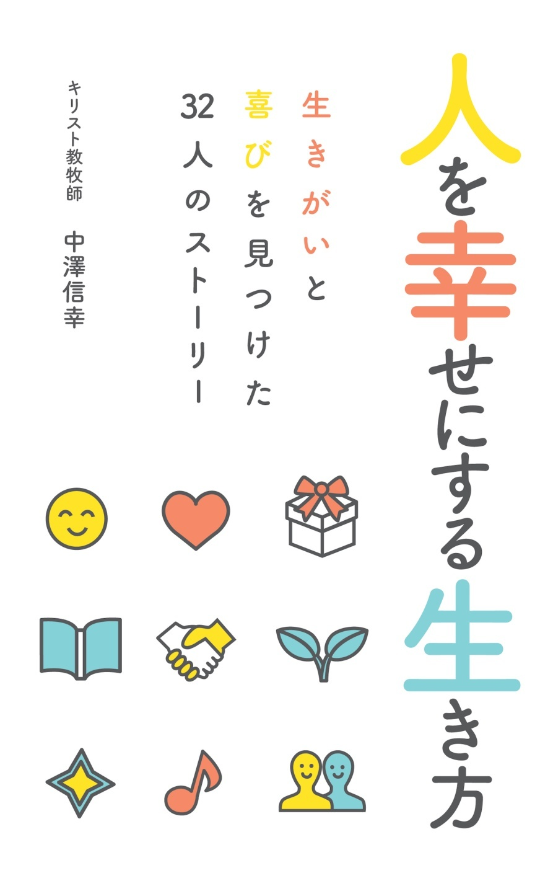

| 人を幸せにする生き方: 生きがいと喜びを見つけた32人のストーリー | |
| 中澤信幸 | |
| (2018) | |
人を幸せにする生き方

はじめに
本当の生きがいと喜びを見つけたい
一流のサーバントになろう
ともに理想を追い求める
キリスト教の牧師さん中澤信幸
「人を幸せにする生き方」の内容
みんなでつくった本
もっと深く知りたい方のために
第１章 サーバントはどんな人？
サーバントのイメージ
サーバントとして歩む利点
桃太郎のお供をしたサーバント
桃太郎の誕生
成長する桃太郎
桃太郎の未来
鬼退治に出かける桃太郎
戦いに挑む桃太郎
サーバント日記「シンデレラの家で」
Ｘ月ＸＸ日 シンデレラの家
Ｘ月ＸＸ日 舞踏会への招待
Ｘ月ＸＸ日 みんなが舞踏会へ
Ｘ月ＸＸ日 シンデレラも舞踏会へ
Ｘ月ＸＸ日 シンデレラが帰ってきた
Ｘ月ＸＸ日 姉たちの帰宅
Ｘ月ＸＸ日 シンデレラとの別れ
第２章 サーバント＝人を幸せにする人
みんなを幸せにするサーバント
サーバントの五つの特長
相手の立場になる
主体的に行動する
信頼関係を築く
影響力を持つ
幸せをもたらす
第３章 なぜいまサーバントなのか？
社会的な理由「競争社会が限界に達しているから」
宗教的な理由「仕えて生きることを教えるキリスト教」
個人的な理由「人を従えることが性に合わない」
第４章 サーバントが大切にする10 の考え方
サーバントの考え方
サーバントになるために
より深く理解するために
第５章 考え方１ 仕え合うために生かされている
与えられたいのちの目的と意味
人生の道筋をつけ、喜びを与えるもの
仕えて生きること
ストーリー01 いのちを与えられたアダムとイブ
ストーリー02 仲間のミスをカバーするアツオさん
ストーリー03 友人を迎えるイクヨさん
ストーリー04 町のパン屋ウメキチさん
第６章 考え方２ どんなことでも人のために用いられる
与えるために任されている
与えられているいろいろなもの
ストーリー05 パンと魚を差し出した少年
ストーリー06 動かない身体でブログを書くエミさん
ストーリー07 与えることを喜びとするオサムさん
ストーリー08 みんなのレストランを経営するカズヤさん夫妻
第７章 考え方３ 未来と自分は変えることができる
変えられないことをあきらめる
変えられることに取り組む
ストーリー09 使命を全うした宣教者パウロ
ストーリー10 トイレ掃除を喜びにするキヨミさん
ストーリー11 自治会で奮闘するクニオさん
第８章 考え方４ 十分に受ける者こそ与えることができる
与え続けるための条件
不完全なサーバント
与えるためには受けることが必要
ストーリー12 自分を取り戻した預言者エリヤ
ストーリー13 子どもたちの学習支援をするケンジさん
ストーリー14 夢の実現を目指すサクラさん
第９章 考え方５ すべての良いことに行う価値がある
効率よりも信念のために
アマゾンで蝶が羽ばたけば
ストーリー15 忠実に仕え続けたヨセフ
ストーリー16 ディズニーランドまで歩いたシズカちゃん
ストーリー17 ジュニアゴルファーの育成にはげむソウヘイさん
第10 章 考え方６ 同じ結果なら多くの人が関わるほうがいい
思い切って助けを求める
ビジョンを繰り返し伝える
信頼して責任を任せる
ストーリー18 助け手を得た指導者モーセ
ストーリー19 人に頼むのが苦手なタマオさん
ストーリー20 母子支援の働きをするチヒロさん
第11 章 考え方７ 敵はいない、味方とそうでない人だけ
お互いに違って当たり前
お互いを理解し、信頼する
ストーリー21 決断を迫られた教会指導者ヤコブ
ストーリー22 サックスプレーヤーのトモヤさん
ストーリー23 中学校のサッカー部指導者ナツキさん
第12 章 考え方８ 人は何をどう与えたかで評価される
与えるための人生
何のために用いるか
どのように用いるか
ストーリー24 みんなに慕われたドルカス
ストーリー25 家族を大切にするニノさん
ストーリー26 リスナーを大切にするヌンさん
第13 章 考え方９ きっといつかは助けられ、報われる
花を咲かせようと思うなら
根気よく継続するために
結局、最後は神だのみ
ストーリー27 信仰の父と呼ばれるアブラハム
ストーリー28 二人の男の子を育てた主婦ネネさん
ストーリー29 保育士を目指すノリコさん
第14 章 考え方10 受けるより与えるほうが幸せである
ぶれない軸とバカ力
どうして与えるほうが幸せなのか
ストーリー30 サーバントの模範となったイエス・キリスト
ストーリー31 リーダーのモデルを探すハジメさん
ストーリー32 勉強に励むヒロミさん
おわりに
サーバントの旅はまだまだ続く
あなたのサーバントとして
大きな岩であればあるほど
33 番めはあなたのストーリー
幸せですか？
生きがいと喜びを見つけたいですか？
「人を幸せにすることで自分も幸せになれる!? 」
本当でしょうか。
いまあなたが興味をもってこの本を手にしてくれていることが、とてもうれしいです。
「人を幸せにする生き方」には、相手を幸せにすることであなた自身も幸せになる、生きがいと喜びを見つけることができる、そういう生き方が書かれています。そのために、いつも大切にしたい10 の考え方を紹介しています。
この本を読み終わったとき、「これが私の目指したい生き方だ」「自分もこうやって生きよう」とスッキリするはずです。人生の軸になる考え方がはっきりし、すがすがしい気持ちになるでしょう。
「サーバント」って聞いたことがありますか？あまりなじみのない言葉かもしれませんね。英語でservant、仕える人という意味です。しもべや召使いを意味します。主人の役に立つように仕える人物です。奴隷に近い意味さえあります。
「サーバントであれ」 ＊ １ と言われたら、どんな気持ちになるでしょう。しもべになれ、仕える者になれと言われていい気分はしません。最近、セクハラ、パワハラなどが話題になっています。仕える立場になったら、どんなにひどいことをされるかわかりません。仕える立場なんて最悪です。
でも、私たちは毎日サーバントとして生きています。仕事や役割のことを考えてみましょう。教師、医者、料理人、会社員、農家、漁師、セールス、介護職、ＳＥなどなど、他にもたくさん。あらゆる職業が、人々や社会のためにモノやサービスを提供しています。もちろん、育児や家事、看病、介護なども、家族のための大切な役割です。人々、社会、家族、友人など、相手のために生きるあなたが、まさにサーバントなのです。
あなたがその責任を果たせるように。相手を幸せにするために積極的に取り組むことができるように。一流のサーバントになって、生きがいと喜びを実感できるように。これが「人を幸せにする生き方」をお届けする目的です。
サーバント、仕えることについて本を書くのは、無謀なことです。読者は「こんな本を書く著者は、どれほどすばらしい人格者なのだろう。牧師さんというからには、きっと清廉潔白な人物に違いない」と美しい誤解をするでしょう。アイドルはトイレに行かない、という誤解と同じです。
あらかじめ断っておきます。私は三流のサーバントです。ただサーバントに憧れ、サーバントとして生きたいと願っているだけです。そのために努力し、挫折し、落ち込むことを繰り返してきました。人格者だなんて、とても言えません。
私は、人よりほんの少しだけサーバントになじみがある環境に生きてきました。牧師の家庭に生まれ育ちました。聖書の教えにも親しんできました。教会ですばらしい人たちの歩みをたくさん見てきました。その中で「理想のサーバントはこういう人だ」「サーバントはこんな価値観で生きている」と少しずつ理解してきました。
私は、理想のサーバントに近づきたいと願っています。あなたもご一緒にサーバントの旅に出かけませんか。
遅くなりましたが、自己紹介をします。私は、中澤信幸です。大野キリスト教会(神奈川県相模原市)で、現役のキリスト教牧師をしています。
私の家族は、四代続くキリスト教徒の家系です。父親は、同じ大野キリスト教会の牧師をしてきました。私も信仰を持ち、牧師を志すようになり、アメリカの神学校 ＊ ２ を卒業しました。帰国後、大野キリスト教会の牧師になり、それから約二十年経ちます。
ずっと「キリスト教は人々に何をもたらすことができるだろうか」と考えてきました。心の拠り所、困ったときの避難所というだけではなく、「生き方を示す」という積極的な役割があることを知りました。教会の方々が、喜びと生きがいをもって毎日の生活に励んでいる姿に教えられてきました。
「こういうサーバントの歩みに人々を導くことが教会の使命だ」
「お互いに仕え合う社会の実現に貢献できる」
それで、サーバントの生き方を伝えることが、私のライフワークになりました。
教会で聖書のお話をするときにも、仕え合って生きることの魅力を語り続けています。ブログやポッドキャストでも、仕えて生きることのエッセンスを発信しています。コーチングを学んで資格を取得し、個人の成長を支援し、プロジェクトの応援を続けてきました。この本を書いたのも、さらに多くの方々に仕えて生きるサーバントの魅力を伝えるためです。
この本は、前半と後半に分かれています。前半では、サーバントとはどういう存在かを解説します。仕えて生きるとは？どんな喜びがあるのか？サーバントの姿を理解することができるでしょう。自分がサーバントとして生きることをイメージしながら読み進めてください。
後半では、サーバントが大切にする10 の考え方を紹介します。サーバントの価値観がわかるでしょう。行動や判断の基準です。あなたの考え方と照らし合わせながら読んでください。
また、サーバントの歩みの例として32 人のストーリーを掲載しています。私が関わってきた方々の歩みをもとにしたものです。具体的な歩みがどのようなものか理解できるでしょう。
なお、ところどころで聖書の教えや信仰的なことに触れています。サーバントの歩みを理解する助けになるようにと願ってのことです。キリスト教の信仰を強要する意図はありません。ご理解ください。
「人を幸せにする生き方」は、多くの人に応援してもらって書き上げました。数ヶ月にわたる執筆でめげそうになることもありました。声をかけてもらったり、助けてもらったりして、なんとか完成させることができました。編集や校正についても、みなさんの貴重な意見をたくさんいただきました。著者は私ですが、大切な仲間といっしょに作った本です。
関わってくれた仲間の声を紹介します。
アイドルと異なり、交通費だけで会えるのが牧師です。その知恵、いかがですか? （Ｍ）
人を幸せにするのは不可能という「思いこみ」から解放されます。（北里大学名誉教授稲吉）
精神論や義務感でなくて、仕える生き方ができるようになれたらいいな！（Ｈ）
「目からうろこ」のサーバントライフ、21 世紀の生き方はこれだ！（Luke)
携帯の手軽さもいいけど本の存在感はやっぱりいいものですね。（ＴＭＯ）
「サーバント」という言葉の奥深さがいっぱい詰まっていると期待しています。（katsu）
人を幸せにする生き方に、一歩前に踏み出すことができそうです。（根城昌美）
ここに先生らしさが詰まっていると思うと後輩牧師としてワクワクが止まらない。（NeriMa）
人に仕えて自分も幸せになる、そんな生き方がしたいと思っていました。（ＴＴ）
サーバントな生き方の魅力がわかる本。こういうの読みたかったんです。（鈴木大輝）
仕える生き方・・・昨日までは雲の上、今日からは私の日常をつらぬく一筋の道。（ＷＳ）
この本を読んだ後、自分の行動にどのような変化をもたらすのか楽しみです。（み）
ひとを幸せにするなんて、大変そう。何故その生き方を選んだのか興味があります。（Ｎ）
中澤信幸は、「きょうもいい人」http:/nobu.bokushi.jp/ というブログで情報の発信を続けています。サーバントとして日常を生きるヒントが紹介されています。「働くみんなの朝の番組『あさのば』」を平日の朝に配信しています。五分ちょっとの音声番組です。ポッドキャストの形式ですので、パソコンはもちろん、スマートフォンやタブレットでも手軽に聞くことができます。こちらも、ブログの中に購読案内があります。
サーバントに関する質問、ご自分の歩みについての相談、コーチングの依頼なども歓迎します。ブログの問い合わせフォームからご連絡ください。あるいはnobu@bokusih.jpまで遠慮なくメールしてください。
その他、中澤信幸の講演、活動予定、今後の執筆については、メールマガジンを購読、あるいはツイッターで@nobun をフォローすると、よりタイムリーに知ることができます。気軽にご利用ください。
読者のみなさんへの特典として「サーバントが大切にする10 の考え方」をシンプルにまとめた資料を用意しました。読みながらメモを加えたり、トイレに貼っておいたり、手帳にはさんだり、自由に活用してください。次ページにダウンロードの案内があります。
＊ １ サーバント・リーダーシップの提唱者ロバート・Ｋ・グリーンリーフによる著書のタイトル(英治出版)
＊ ２ キリスト教の働きに従事する人を養成する大学院
この本に出てくるサーバントはどんな人でしょうか。
特別な職業や立場に限定されません。誰でもサーバントになることができます。
完璧なサーバントに出会うことはごくまれです。でも、まわりの人たちの中に、「あっ、この人サーバントかも」という人がいませんか。
理想のサーバントはこういう人です。
・人の役に立つことを使命としている人。持っている能力、時間、財産、関心など、すべてを用いて人を助けたり、支援したりする。それをなによりの生きがい、やりがいとしている。
・他人の気持ちや考えを汲んで行動する人。常に目の前の人に寄り添い、思いや考えをよく理解することができる。自分の利害よりも、相手に対する思いを優先して行動する。
・良いことを願い、強い意志で実行する人。正しいこと、必要なことを見定め、そのためにすべきことを知っている。人の意見、状況や環境に左右されず、成し遂げる。
・助けられやすく、協力されやすい人。自分にできることできないことをわきまえて、人に頼むのが上手。周囲の人が助けを惜しまず、なぜか協力する人の輪ができる。
・小さなことにも忠実に取り組む人。事の大小にかかわらず、与えられた責任をきちんと果たす。人によって態度を変えず、いつも安定している。
・人を誘い、一緒に巻き込んでいく人。誰に、何を、どのように頼むとよいかを知っている。傍観者を当事者に変え、意欲的に取り組むコミュニティを作り出す。
・敵を作らず、まわりから感謝される人。誰も悪者にせず、平和な解決策をもたらす。穏やかさが好意的に受けとめられ、感謝されている。
・役に立つと信頼されている人。困ったときに助けを求められる。一生懸命にやってくれて、どうにかしてくれるだろう、と信頼されている。
・冷静に状況判断ができる人。精神的にいつも安定している。思いがけない状況も冷静に受け止め、的確な判断をし、最善を尽くす。
・与えることで影響力を持つ人。自分の持っているものを惜しみなく与えることができる。その結果、良い信頼関係を築き上げ、影響力を持つ。
では、サーバントとして生きると、どんな良いことがあるのでしょうか。利点と思われることの例をあげてみます。
・目標、生きがい、やりがいを見いだせる
・自分が有益な存在であるという実感が持てる
・いちいち損得を考えて振り回されることがない
・自分を正しく理解してもらうことができ、正直に生きられる
・やりきった感をもって一日を終えることができる
・仲間と協力して仕事をするのが楽しくなる
・人との適切な距離を見いだし、信頼関係を築くことができる
・人の評価を気にすることなく、自信をもって行動できる
・希望をもち、楽観的に取り組むことができる
・生きていること自体が喜びである
あなたにとって一番魅力的なのはどの点ですか。自分のものにしたいことはどれですか。自分とはほど遠いなと感じるのは何でしょうか。
サーバントとして生きることによって、あなたにとって大切なものが手に入るように願っています。
サーバントの姿をもう少し具体的に理解するために、ひとつの物語を紹介します。あの桃太郎のそばに寄り添った幻のサーバントのお話です。
昔々、あるところに、おじいさんとおばあさんが暮らしていました。一生懸命働いて、幸せに、正直に生きていました。
その日、いつものとおりおじいさんは山へ芝刈りに、おばあさんは川へ洗濯に行きました。すると、川の上の方からどんぶらこ、どんぶらこと大きな桃が流れてきました。びっくりしたおばあさんは腰をぬかしてしまいました。そこに、サーバントが現れました。
「何かお手伝いしましょうか」
「おじいさんを呼んできておくれ」
サーバントは山へ行っておじいさんを連れて来ました。
いざ、桃を割ろう、ということになったのですが、こんなに大きな桃を切る包丁はありません。サーバントは、ひもをかけて切ったらどうか、と提案しました。それはいい、とおじいさんが納戸の奥から長いひもを持ってきます。ひもをぐるっと回しかけると、すんなり桃を割ることができました。
するとなんと、桃の中に赤ちゃんがいるではありませんか。おじいさんとおばあさんはびっくり。そして、悩み始めました。年寄りの自分たちにこの子が育てられるだろうか。村の人々は変な噂をしないだろうか。たくさんの問題があって、頭を抱え込んでしまいました。
「何が一番大きな問題だと思いますか？」
サーバントが尋ねると、村の人々が変なふうに思うだろう、と気にしていることがわかりました。
「二人ができることは何ですか？」
おじいさんとおばあさんは知恵を出し合いました。今までズルをしないで正直に生きてきたのだから、今回も正直にすべて話そう、という結論になりました。信じてもらえても、信じてもらえなくても、桃から生まれた「桃太郎」を育てる決心をしたのでした。
おじいさんとおばあさんは、愛情をこめて桃太郎を育てました。高齢になってからの育児で、成長していく桃太郎に追いつかず、困ったり、不安になることも多くありました。サーバントは、定期的におじいさんとおばあさんのもとを訪れては、何かできることはないかと声をかけ続けました。二人にとって、気にかけてくれる人がいることは、もうそれだけでとても心強いことでした。
サーバントは、実際にも助けてくれました。わんぱくな桃太郎の遊び相手を探してくれたこと、同じように孫の面倒を見ているママ友ならぬババ友を紹介してくれたこと、おじいさんと一緒に剣道をやるように勧めてくれたこと、どれもサーバントの助けでした。こうして桃太郎は、おじいさんとおばあさんのもとで立派に成長していきました。
桃太郎にとっても、サーバントは良き相談相手でした。桃太郎は成長するにしたがって、サーバントの来訪を心待ちにするようになりました。サーバントと話をすると、自分が将来何をしたらよいのか、大きなヒントをもらえるような気がしたのです。
中でも、桃太郎の心をとらえて離さなかったのは、サーバントが語ってくれる鬼ヶ島の鬼の話でした。村の人々は鬼の存在におびえ、非常に苦しめられているのだと言います。それを聞くたびに、桃太郎は悩みました。自分が戦いに行くべきではないだろうか。でも、そんな大それたことができるだろうか。サーバントは桃太郎の葛藤に耳を傾け、寄り添いました。
「私がどう思っているか、お話ししてもいいですか」
桃太郎がうなずくと、サーバントは言葉を続けます。
「私には、もうすべての状況が整っているように見えますよ。あとはあなたの決断だけではないでしょうか」
桃太郎は、ジーッと考え込みました。そして、思い切ってこう言います。
「鬼ヶ島に、鬼を退治しに行こう」
桃太郎は、サーバントにも鬼ヶ島の戦いについてきてほしい、と頭を下げて頼みました。
こうして、桃太郎とサーバントは連れ立って鬼退治に出かけることになりました。おじいさんとおばあさんは、とても心配しました。サーバントは「私もできるだけの助けをしますから」と言って、安心させました。
いよいよ出発の日、おばあさんは桃太郎に手作りのきびだんごを持たせます。
「これを食べて力をつけて、村の人のために鬼をやっつけてきておくれ」
「ありがとう」
桃太郎とサーバントが鬼ヶ島へ向かう途中、道端で犬に出会いました。サーバントは立ち止まり、犬の頭をなでて話しかけます。犬はサーバントにとてもなつきました。どうやらサーバントは、犬と会話ができるようです。
「桃太郎と一緒に鬼を退治しに行こうとしているんだよ」
「私もついて行きたい」
同じように、木に登っていた猿も、池で水を飲んでいたキジも桃太郎の仲間に加わりました。
桃太郎は、犬、猿、キジに、きびだんごを分けてやります。桃太郎を中心にした、鬼退治のチームが出来上がりました。
サーバントの道案内に従って、いよいよ一行の目の前に鬼ヶ島が姿を現しました。戦いのときも間近です。
サーバントは、桃太郎たちにここで待っているように言いました。自分が先に行って様子を見て、どう攻めればいいかを探ってくる、というのです。サーバントは一人で出かけていきました。
サーバントは帰ってくると、鬼たちの様子を伝えました。力の強い鬼がたくさんいること、島の南の門のところだけは守りが手薄なことなど、下調べしてきたことを彼らに伝えます。
すると犬が、キャンキャン吠えてかみつくことができる、と言います。キジは空を飛んで頭上から攻撃することができる、と言います。猿は身軽な身のこなしで鬼を翻弄する、と言います。そして、みんなで桃太郎のほうを見て、最後のとどめを刺すように頼みました。
「みんなで力を合わせれば、必ずできるはずだ」
きびだんごを食べて力をつけ、鬼ヶ島の戦いに挑みました。
それからの戦いの様子は、読者のみなさんがよくご存知のとおりです。桃太郎と犬と猿とキジは、見事に鬼ヶ島の鬼を退治しました。そして、村の人々の財宝を山ほど車に積んで持ち帰りました。村の人々は歓声をあげて桃太郎を迎えます。おじいさんもおばあさんも涙を流して喜んでいます。こうして、桃から生まれた桃太郎は、村の英雄となったのでした。
えっ、サーバントはどこへ行ったのかって？桃太郎たちの勝利を見届けたサーバントは、彼を必要としている次のヒロインのところへ、ひっそりと向かって行きましたとさ。おしまい。
サーバントの姿を思い浮かべることができたでしょうか。自分のすべきことを見つけて、適切に行動に移していましたね。与えて、仕えるように関わるのがサーバントの特長です。
もうひとつ、シンデレラに仕えた仮想のサーバントのお話です。当時の劇的な様子をつづったサーバントの日記を読んでみることにしましょう。
今日から新しい家に来た。ここの家庭事情は複雑だ。母親は後妻さんで、連れ子の姉が二人、それに前妻の残した女の子がシンデレラという名前で末っ子になる。シンデレラは、まるで女中みたいな扱いだ。何かとひどくいじめられている。
私のふるまいも難しい。よく仕事をすると、シンデレラへの風当たりが強くなる。「まったくシンデレラは仕事ができないんだから、役立たず」とののしられていた。賢くふるまわないと、ますますこの家を複雑にしてしまいそうだ。
まずは、一人ひとりをよく観察することから始めよう。母親は、とにかく自分と自分の子どもたちが新しい夫との生活で幸せになれるように必死のようだ。前妻のことも、そうとう意識しているように見える。一番上の姉は何でも自分の思うとおりにならないと気がすまない。仕切りたがりでもある。ていねいに状況を報告してあげるのがよさそうだ。下の妹は背が低く太り気味なことを気にしている。姉に同調してシンデレラにつらくあたっているが根は優しいようだ。ケーキがあればいつも笑顔でいられる。シンデレラは、もうちょっと空気が読めたら、あそこまでいじめられることもない。助けになってあげられることも少しはありそうだ。
この地方を治める王様から、街の人たちに舞踏会への招待状が届いた。二人の姉たちはとても楽しみにしている。さっそく、あれやこれやと注文だ。ドレスの色、靴のサイズ、バッグのデザイン、ヘアメイクなどなど。一つひとつのリクエストに応えるのがサーバントの仕事だ。
姉には、報告、相談、確認しながら進めていこう。妹には、ちょっとでもスリムに見える服と背が高くなる靴を用意することにしよう。
母親は、この舞踏会で年頃の娘たちにふさわしい結婚相手が見つかるように願っている。お嬢さんたちも、素敵な出会いを期待している。他の使用人たちは、冷ややかな目で無理だろうと言っている。私はそうは思わない。それぞれいいところもある。素直で単純なところもある。ご主人の願うことを、しもべも願わずにどうするのか。お嬢さん方が素敵な出会いに恵まれますように。
今朝、母親とともにお嬢さんたちが舞踏会へ出かけて行った。準備はあれこれ大変だったが、とりあえず送り出すことができてホッとした。
おいてきぼりのシンデレラを、このままにするわけにはいかない。シンデレラは、山のような仕事を押し付けられて、泣いている。「私だって舞踏会に行きたい」それはそうだろうよ。
仲間と相談して、急いでシンデレラを送り出す準備を始めた。いつも洋服屋とやりとりをしている使用人は、無理してシンデレラにぴったりのドレスを用意してくれた。靴屋に出入りしている使用人は、ショーウィンドウに飾ってあるガラスの靴を借りてきてくれた。別の使用人は、近所からぼろぼろの馬車を一日限りの約束で借りてきて、見違えるようにきれいに仕立ててくれた。ここのみんなはすばらしい仲間だ。ふびんなシンデレラのことを気にかけている。シンデレラは「魔法みたいっ！」と無邪気に喜んでいるけれど、魔法なんかじゃない。シンデレラのために、一生懸命仕えてくれるサーバントたちのおかげだ。
さぁ、準備は整った。明日の朝にはシンデレラを送り出すことができそうだ。私は、シンデレラに代わって、山のような仕事をとっとと終わらせることにしよう。
今朝、シンデレラを舞踏会に送り出した。馬車が出て行って見えなくなったとき、仲間の使用人たちと喜んだ。自分たちのやるべきことをやったという満足感が広がった。
ひとつだけ心配なのは馬車のことだ。明日の朝には持ち主に返さなければいけない。だから、今晩十二時にはお城を出てこなければいけない。時間をきちんと守れないと、借りた人に迷惑がかかる。私たちにとって約束を守ることは何より大事なことだ。シンデレラは約束を守れるだろうか。
ただ、心配しても始まらない。何度も繰り返し念を押したし、お供の使用人もわかっているはずだ。心配するのはサーバントの仕事ではない。心配しなくていいように精一杯準備したら、後は結果を受け入れるだけ。もし馬車が帰って来なければ、そのときはそのときだ。
サーバントはサーバントであって、主人ではない。自分の権限で動かせないこともある。若い頃は、これが受け入れられなくてずいぶん苦労した。でも、自分なりの線の引き方、責任範囲を明確にすることを身につけて救われてきた。私が今日すべきだったのは、シンデレラに押しつけられた仕事を全部終わらせること。ちゃんとやった自分を褒めてあげよう。
今朝早く、シンデレラは無事に帰ってきた。とても楽しかったようだ。舞踏会の様子をいきいきと喜んで話す笑顔がすてきだ。私がここに来て以来、決して見せることのなかった笑顔だ。なんて嬉しいことだろう。仲間で協力し合ったかいがあった。
馬車も無事に返せた。みんなが喜ぶ中、一人だけ浮かない顔でいたのが靴を借りてきた使用人だった。十二時の鐘が鳴ったとき、急いで階段を駆け下りる途中、なんとシンデレラはガラスの靴を脱ぎ捨ててきてしまったのだ。主人に代わって靴屋さんに謝ること、これも使用人の仕事だ。ただし、主人とのいい関係があれば、こんなこともさほど苦にならない。不思議なものだ。
母親と姉たちも帰ってきた。お母様にとっては、初のお城の舞踏会で、とてもお疲れの様子。娘たちが大満足でホッとしているようだ。姉たちは、舞踏会の様子を話し始めたら止まらない。素敵なお城だったこと、トータルのコーディネートを褒められたこと、おいしい料理があったこと、気の合う男性と出会えたこと。
一番の話題は、あのガラスの靴に足が合っていれば、ということだった。シンデレラが置いてきたガラスの靴を王子が拾い上げ、この靴の持ち主を探し出すように命じたのだという。姉たちも挑戦してみたのだが、残念ながら入らなかった。他の誰も合わなかった。姉たちはその話をしているとだんだん不機嫌になってくる。
「これはいかん」ということで、楽しめたことの話題をさらに聞き出す。これからもステキな関係が続くといいですね、と水を向ける。姉たちは明るい表情を取り戻して、「そうね、次もまたいろいろ助けてね」と。信頼されて仕事ができている証拠だ。
今日、本当に突然シンデレラが家からいなくなった。お城から使いの者が一軒一軒ガラスの靴が合う女性を探していた。ついに、シンデレラを探し当てた。お見事だ。この仕事ぶりはすごい、並じゃない。同じ立場だからよく分かる。
「シンデレラを城にお連れしたい。準備を整えてほしい」
もともとあまり多くないシンデレラの荷物をまとめ、必要と思われるものをあちこちからかき集め、シンデレラを送り出した。悲しくても、それを隠してでさえ一生懸命に働かなくてはいけない。
シンデレラは「ついてきてほしい。城でも仕えてほしい」としきりに頼んできた。光栄なことだった。でも、応じるわけにはいかない。別れるのは寂しい。いつまでもシンデレラといっしょにいたい。城で仕えるのも名誉だ。でも、呼ばれたのはシンデレラだ。私は自分の場所ですべきことをするだけ。まだここでやるべきことがある。
二人の姉たちは、シンデレラが城に迎えられることを嫉妬するだろう。でも、姉たちにもそれぞれ素敵な恋人ができたのだ。その関係がうまくいくように努めるのが、これからの私の仕事だ。それが叶ったら、もうこの家にいることもあるまい。また次に必要とされるところに、出かけていくことにしよう。
シンデレラよ、お幸せに。あなたにお仕えできたことは、私の一生の宝です。
二つの物語から、サーバントの姿を理解することができたでしょうか。次の章では、サーバントはどんな人なのか、本質的な特長をまとめます。サーバントの旅はどこへ向かうのでしょうか。
サーバントは特別な種類の人ではなく、特別な職業や立場、資格があるわけでもありません。日常生活で、みんなを幸せにするために生きている人です。仕事でのやりとり、お客様への対応、同僚とのコミュニケーション、家族との生活、趣味のサークルでの活動など、毎日の一つひとつの場面で人を幸せにするように行動します。
サーバントの願いは、本当の幸せです。貯金がたくさんある、素敵な洋服を着ている、好きなところに旅行に行ける、友人に恵まれている。そういうこと以上に、心から幸せだと思える生き方を求めています。
しかも、自分だけでなく、みんなに幸せであってほしいと願っています。自分にとって大切な人、まわりにいる人、関係するすべての人が一緒に幸せになることがサーバントの願いです。
そのために、サーバントは実際に行動します。少しでも人の役に立つように、みんなを幸せにできるように、自分にできることをしようとします。それが自分にとっても喜びであり、生きがいとなっているからです。
サーバントにはどんな特長があるでしょう。シンプルにまとめてみましょう。
サーバントとは、相手の立場になって主体的に行動し、信頼関係によって影響力を与え、
幸せをもたらす人である。
サーバントという言葉は、主人に仕えるしもべを意味します。奴隷というと少し極端ですが、主人の言うとおりに役割を果たす召使いや使用人のことです。
主人としもべは、本来とてもよい関係をもっています。主人はしもべを雇い、生活を保証し、責任をもって守ってくれます。しもべは、主人のために心を込めて仕えます。お互いの存在によって、それぞれが幸せな歩みを手に入れることができ、感謝し合います。
しもべは「主人はどうしてもらいたいだろうか？」と考えます。この状況だったら、この人を相手にしたら、主人だったらどうするだろうか。何をしろと言われるだろうか。常に主人の立場で、自分の求められている行動を判断しようとします。
サーバントも同じです。相手の幸せを願い、相手の立場で行動します。自分の利益や立場にこだわりません。自分は得をするだろうか、損をしないだろうか、と考えるよりも先に、どうしたら相手のためになるだろうかと考えます。相手の立場を最優先して状況を判断し、自分自身の関わりを見出そうとします。
サーバントにとって、相手のために生きること、大切な人を幸せにすることが使命であり、生きがいです。自分が持っているものをすべて使って、相手を常に幸せにしようと心に決めています。
自分のことについては十分に満足しています。必要なものは与えられるとも確信しています。あれがない、これがない、と欠乏感にかられて、自分を優先して行動することはありません。
これだけの報いがあるはずだ、と見返りを求めません。評価や報酬はあとからついてくるものです。あればうれしいものですが、なくても仕えることをやめません。一番大切なのは、相手が幸せになることだからです。
サーバントの行動の本質は、仕えることにあります。ちょうど、しもべが主人のために仕えて働くのと同じです。自分のもっている能力、時間、財産、関心などを提供します。相手のために犠牲を払うことを惜しみません。口先の言葉だけでなく、具体的に体を動かして行動します。しかも、一度きりではなく、必要とされる間ずっとそれを継続します。
サーバントは主体的に仕えます。仕えることこそ自分のすべきこと、使命であると考えるからです。強制されてではありません。いやいやながら仕方なくでもありません。仕えることは、与えられているものを最もふさわしく活用する方法だと考えています。これ以上の喜びはなく、これ以上に満足感を覚えることもありません。
サーバントは忠実です。小さなことであっても、手を抜いたり、軽く見たりすることはありません。大きなことであっても、尻込みせず、臆することなく、自分のできることに取り組みます。相手が誰であっても同じです。一つひとつのことについて心を込めて行います。自分が関わること、貢献することに喜びを見つけているからです。
また、サーバントはどのような状況であっても自分が貢献できることがあると考えます。とても深刻な状況であったとしても、自分に不利な状況であったとしても、です。仕える姿勢は、状況に左右されません。できること、すべきことを自分から見つけ、それを熱心にしようとします。小さなことであっても、何かの役に立つはずだ、と信じています。
サーバントは、関わる相手との間に信頼関係を築くことができます。裏表がなく、いつも変わらずに仕える姿を見て、周囲の人々みんなからも信頼されるようになります。「あなたのような人がいてくれて助かる」と喜ばれ、「ぜひ仲間になってくれ」と歓迎されます。
サーバントは、誰とでもよい関係を築くことができます。立場が上の人にこびたり、立場が下の人をぞんざいに扱ったりしません。仲間だからといって無神経な言動をすることもありません。いつも相手を尊重し、大切な人として接します。だから、誰からも信頼されます。
頼りにされ、あてにされるようになると、しばしば大切な役割を任されることがあります。いつも相手のためになることを考え、人を悪く言ったり、利用したりしないことが理解されるようになります。信頼し任せることができる人と認められて、「あなたにこれをお願いしたい」と言われます。
サーバントとまわりの人々との関係は、安定しています。状況や場面が変わっても、時間が経っても、いつも同じ関係が築かれています。うまくいっているからという表面的な関係ではありません。もっと深い、状況に左右されない信頼関係が築かれています。
サーバントは仕える立場に自分を置きながらも、人を動かす力を持っています。権力や、強制的な指導力ではありません。影響力です。サーバントを信頼する人たちが、自分のすべきことに気づくようになり、動機づけられて、自分から積極的に行動するようになります。
サーバントの影響力は、よい未来をもたらします。「もうどうにもならない」と思われるような悲観的な状況であっても希望を与えます。「それでも何かできるはずだ」というサーバントの主体的な姿勢が、まわりの人に影響を与えるのです。どうなるべきだろうか、どうすることができるだろうか、と考え始め、一人ひとりが取り組むようになります。このことは、状況をよい方向に導くだけでなく、関わる人たちの未来にも大きな影響を及ぼします。能力的にも、人格的にも成長が促されます。
サーバントの影響力は、よいコミュニティを作り出します。いっしょに関わる人たちの雰囲気がよくなるからです。ギスギスした緊張関係ではなく、一緒に協力する友好的な関係が広がります。大きな目標に向かって、それぞれの役割を果たして、誇りをもって働く関係になります。協力者、賛同者がどこからともなく集まってきて、それぞれのもっているものを惜しみなく提供し合う関係です。サーバントの主体的に仕える姿勢が共有された結果です。
サーバントは、結果的にみんなに幸せをもたらします。相手を幸せにします。具体的な助けとなり、必要が満たされ、願いがかないます。加えて、さらにそのまわりの人たちも幸せにします。協力関係が広がるからです。喜びをともに分かち合い、祝福し合います。サーバントがいてくれてよかった、と誰もが思うでしょう。サーバントの歩みはまわりの人に多くのよい影響を与え、次のサーバントを生み出し、育てます。もたらされる幸せはさらに増え、広がります。こうして、名もない多くのサーバントたちによって、よりよい社会が実現していくことになります。
もちろん、サーバント自身も、仕えることの中でかけがえのない幸せを手に入れます。単なる幸せではありません。感謝されるからというだけでもありません。非常に本質的な幸せです。心の奥深く、魂の部分が満たされる感覚です。これこそ私のすべきことである、これこそ私の生き方だ、と幸せな思いが満ちあふれるのです。
次の章では、なぜいまサーバントの歩みに注目するのか、その理由を説明します。サーバントの旅支度のようなものです。忘れ物がないように。
なぜサーバントに注目するのでしょうか？
なぜ熱心にサーバントとしての歩みを勧めようとするのでしょうか？
その理由をお伝えします。ひとつは社会的な理由、もうひとつは宗教的な理由、最後は私の個人的な理由です。
私たちの社会は、競争社会です。人と人とが競争し、強い者が上になり、弱い者が下になる。そうやって関係が決まる社会です。上に立つ人は優秀で力があり、下につく人たちの力を利用して、よいことを実現する。その見返りに多くの報酬を受けることができます。一方、下につく人はどちらかというと力が劣っていて、上に立つ人の命じたことを行う。それによって、わずかな報酬を得ることになります。多くの報酬を受けて、幸せになるためには、序列の上に立つことが必要です。
ところが、競争を前提にしたこのような社会のあり方が限界に達しているように思えます。
・上位の人がますます裕福になり、下位の人がますます貧困に悩まされる。格差が広がり、序列を覆すことがとても難しい、という格差社会が定着してしまいました。
・権威はかろうじて受け入れられていますが、上に立つ人が尊敬されていません。従っている人たちの不満がたまっています。
・社会は豊かになり、個性の豊かさが重んじられる雰囲気が広がりました。力のあるなし、上下の関係が、大きな意味をもたない面も出てきました。
・上に立つ人に無条件に従うことに疑問を感じる人が多く出てきました。インターネットによって内部告発も多くなり、失脚した人たちもいます。
・力ずくの圧力で人を従えようとして、ハラスメントが横行しています。ブラックな企業体質もあちらこちらに見られます。
・上司と部下の協力関係や信頼関係が失われています。相手を蹴落とすことでしか幸せを手に入れることができません。
・今日手に入れた幸せは、明日には誰かの手によって奪われていくかもしれない、と警戒し合います。誰の得にもならない、足をひっぱりあう社会に行き着いてしまった感じです。
・親族や家族間の争いも絶えません。
・友人同士の関係も、どれだけリア充なのか、「いいね」の数の競争です。
・地域の住民同士の関わりはうすれ、下手に声をかけると逆に危害を加えられる危険すらあります。
・学生たちの間でも、スクールカーストと呼ばれるような階級があります。
・困っている人を助けようという善意も、人の目をはばかってか、本当に必要な人には届きません。
・家庭内の虐待は現世代から次世代へと連鎖していきます。負のスパイラルから抜け出ることが難しい状況です。
こういった競争社会の限界の中で、サーバントには大きな可能性があります。たとえ上の立場でなくても、自分から率先して仕え、上の人にも下の人にもよい影響力をもつことができる。そのことで、まわりも自分も幸せになる。そういうサーバントが多く増えていったら、競争社会の限界に希望の光が差してくるでしょう。サーバントに感化され、仕える仲間が増えて、お互いを思い合う関係が広がり、コミュニティが変わっていくのではないでしょうか。今よりも信頼関係が深まり、自発性がものをいうようになり、助け合いの精神が社会の根底に広がっていきます。
私は、競争社会の限界の中で、サーバントが持つ可能性に期待しています。
もう一つの理由は、私がクリスチャンであり、キリスト教の牧師であることと大きく関係しています。
仕える生き方の話をすると、よく理解してもらえます。そういう生き方をしたいと求める人がたくさんいます。クリスチャンの方々だけではありません。クリスチャンでない方々も賛同してくれます。実際にサーバントについて学び、実践しているすばらしい方々にも、たくさん出会ってきました。人を幸せにする生き方の魅力は、多くの人の心に訴えかけるものだと確信しています。
聖書には、まさにサーバントの歩みが教えられています。イエス・キリストが教えたのは、仕えることでした。人々に良いものをもたらし、社会を積極的に作り変えていくために、それぞれが能動的な役割を担っていく生き方です。
イエス・キリストは、その仕える歩みを実行した模範でした。象徴的な場面は、弟子たちの足を洗う場面です。弟子たちと最後の食事をする前に、イエスは弟子たちの足元にひざまずいて、彼らの足を洗いました。本来ならば、食卓に仕えるしもべが行うべきことでした。教えを説く教師であるイエスが、仕える者の姿をとって弟子たちの足を洗うとは、絶対にありえないことでした。弟子の足を洗ったイエスは「主であり、師であるこのわたしが、あなたがたの足を洗ったのであれば、あなたがたもまた、互いに足を洗い合わなければなりません ＊ １ 」と教えました。
私は、キリストの模範にならって、仕える者になりたいと願っています。また、キリスト教の牧師としてこの教えを人々に語り伝え、共に仕える者たちになることを励ましています。私にとって一番大切なライフワークです。
私は、キリスト教の牧師だからこそ語れる視点で、サーバントについて紹介したいと願っています。
最後は、私の個人的な理由です。私は人の上に立ったり、指導的な立場になったりすることが多くあります。しかし、どうも上から人を従わせることが苦手です。
小学生、中学生のときには学級委員もやりましたし、演劇会では主役もやりました。自然とみんなの先頭に立つことが多かったように思います。ところが、地元を離れて、広い世界に出ると、自分よりも能力のある人たちに出会いました。上には上がいました。狭い世界なら一番でも、広い世界なら一番ではありませんでした。当たり前のことです。
ところが、下で仕える立場になっても、上の人の言うことを聞けばいいや、とも思えませんでした。もっとこうしようというアイデアを出したり、みんなの役に立つ行動を取ろうと考えたりしていました。下にいながらも、全体に対する役割を自覚していたのです。競争や上下関係に支配されない視点、関わり、影響力を持つようになりました。私にとっては、上で権力を奮って人々を従えるよりも、対等、あるいは従う立場で影響力を発揮することが、自分らしい生き方だと自覚しました。
関わるみんなが幸せであるように、それが私の願いでした。そのために自分ができることをしよう、と考えてきました。そんな生き方を、サーバントと呼ぶことを知りました。興味をもって学んでみると、あらためて自分の行動の軸を発見することができました。
あわせて、人のためにがんばってくれている人が燃え尽きたり、報われずに夢をあきらめたりしていく姿も見てきました。なんとか力になりたい、と願いながら、何の支えにもなることができないでいました。私の中に、同じ思いをもってがんばっている人と励まし合いたい、支え合いたい、という気持ちが、いまでも強く残っています。
サーバントについてこれほど熱心に書くのは、自分自身への、そして大切な仲間への応援歌だからです。
私がサーバントについて熱心に勧める三つの理由でした。サーバントとして生きることに、大きな可能性と本当の生き方があると信じています。次の章から、サーバントが大切にする考え方を紹介します。
さぁ、いよいよ旅の始まりです。サーバントの旅に出かけましょう。
＊ １ ヨハネの福音書13 章14 節
考え方は行動のもとになる価値観です。何のためにするのか。何を基準にして判断するのか。「私は何者なのか」という人生哲学と呼んでもいいでしょう。大きな人生の目標、仕事への取り組み方、人間関係において大切にすべきことなど、具体的な指針のもとになるものです。
目に見える行動は、目に見えない考え方が表に現れたものです。家庭、仕事、仲間、地域コミュニティなどありとあらゆる場面において、です。「どう考えるか」は、「何を願うか」という志のもとになり、志から「何をするか」という具体的な行動が生まれます。
たとえば、「成功は飛躍ではない、積み重ねだ」と考える人は努力型の生き方を志し、コツコツと地道な作業を繰り返すことを選択するでしょう。「私の価値は人からの評価で決まる」と考える人は八方美人型の生き方を志し、相手に気に入ってもらえる行動を選択するでしょう。同じ状況でも、考え方ひとつで志が変わり、実際の行動が変わってきます。考え方とは、人の歩みの根底にあり、非常に重要なものです。
ですから、サーバントになるためには、まずサーバントの考え方を理解することが必要です。行動を真似すれば、サーバントらしくふるまうことはできます。しかし、サーバントになることはできません。コスプレをしてアニメのキャラクターを演じることはできても、そのキャラクターになることはできないのと同じです。内面、つまり生き方の根本がサーバント仕様になる必要があります。サーバントの考え方を自分のものとするとき、実際にもサーバントとして生きている自分を発見するでしょう。
紹介するのは「10 の考え方」ですが、十通りの別々な考え方ではありません。十個の考え方がセットになったものです。一つひとつの考え方はお互いに関係し合っています。これは採用するけれどあれは採用しない、ということはできません。つまみ食いのようにいいとこ取りをしても、残念ながらチグハグになってしまいます。ひと続きの考え方のセットであればこそ、一貫した、ぶれない歩みになります。
「サーバントが現実世界をどう見ているか」「何を大切にしているか」「何を信じているか」を理解するとき、そうなのかと納得することもあるでしょう。サーバントは風変わりな人、特別な能力のある人、現実からかけ離れた人ではありません。ごく普通の人が、サーバントの考え方を実際に生きているだけのことです。サーバントのトータルな考え方を理解すれば、自分がサーバントとして生きる姿をイメージすることもできるはずです。
次の章から、各章ごとにひとつの考え方を取り上げます。「サーバントが大切にする10 の考え方」は順不同です。興味をもったところから読み始めてください。
各章の前半では考え方について説明します。サーバントはどう考えるのか。なぜそう考えるのか。この考え方だと何が変わってくるのか。サーバントの価値観を深く理解することができるでしょう。
後半ではその考え方にまつわるストーリーを紹介します。聖書の人物のストーリーと、私が出会った方々の経験をもとにしたストーリーです。自分の身のまわりの状況を重ね合わせるように読むとよいでしょう。
一歩一歩、サーバントの旅を続けていきましょうね。準備はいいですか。
私たちのいのちは、父と母が肉体関係を結び、胎内で卵子が受精し、胎児として育まれ、この世に生み出されたものです。想像を超える遺伝子の組み合わせの可能性の中から私という存在が造られ、この心と体を与えられて生まれてきました。とても神秘的なことです。
サーバントは、いのちの背後に神の存在があると理解します。単なる人間の営みの結果として生まれるものではありません。神が一人ひとりの人間をかけがえのない価値ある存在と認めて創造し、この世を生きるいのちを与えたのです。
人はただ生きているだけの存在ではありません。あるときパッとこの世に生まれ、いくらかの時間を過ごし、やがて死んで消えてなくなる。それだけの無意味な存在ではありません。
神はいのちとともに、生きる目的と意味を与えました。すべての人が意味ある生涯を生き、人生の目的を果たすことが、神の切なる願いです。
人生の目的と意味を理解している人生とそうでない人生では大きな違いが出てきます。
旅をイメージしてみましょう。目的地がある旅とない旅とでは大違いです。目的地が決まっていれば、どちらに向かって進んだらよいかはっきりとわかります。地図を見ながら、道がまちがっていないことも確認できるでしょう。あとどれくらい歩けばよいかも見当がつきます。ペース配分も可能です。目的地に着いたら、到達した満足感に小躍りして喜ぶでしょう。
一方、目的地のない旅はどうでしょう。行き先が定まらないので、あっちへ行ったりこっちへ行ったりします。時間ばかりがむだに過ぎ、通ってきた道をふりかえるとむなしくなります。後悔することも多くあります。せっかっく到達しても、そこが目的地なのかさえわからず、喜びや達成感を得ることができません。気ままな散歩ならまだしも、せっかくの旅行ではありえないことです。
人生も同じです。その目的と意味がわからなければ、「私の人生の旅は最高だった」と言うことは難しいでしょう。
サーバントは自分の人生の意味と目的をはっきりと自覚しています。なので、いろいろな場面での決断に一貫があり、筋の通った歩みになります。毎日の生活に満足感があります。たとえ困難にぶつかってもチャレンジし、乗り越える力が湧いてきます。何歳になっても喜びや希望があるでしょう。「私は自分の生きるべき人生を歩みきった」とふりかえることができます。
では、人生にはどんな意味があり、目的があり、価値があるのでしょうか。
サーバントは、自分の存在には無条件に価値があることを自覚しています。神によって存在を創り出され、いのちを与えられたという価値です。人のためになったら、社会のためになったら、立派だと評価されたら、価値ある者になるのではありません。あなたは生きているだけで神に愛されている、宝のような存在です。
サーバントにとって、与えられたいのちの目的は仕えることです。言いかえると、みんなを幸せにすることです。家庭や社会の一員として、友人、仲間のひとりとして任された役割や責任を果たし、人を大切にし、みんなに喜びをもたらす歩みです。これを目的に、一日一日一つひとつのことを、心をこめてやり遂げます。
このように、神に愛されていることを自覚し、人に仕えることによって、サーバントは人生の意味を見いだします。これこそ私の生き方だ、と力が湧いてきます。生きがいを感じ、喜びがあふれてきます。自分のために獲得する成功とは比べ物にならない、心の底から沸き上がってくるような満足感です。
アダムとイブは、聖書が描写する最初の人間たちです。人間が本来どんな存在であり、どのような目的と意味をもって生きるべきかを教えるために登場します。
はじめに神が全宇宙を創造しました。天と地を造り、陸と海をわけ、昼には太陽、夜には月と星が地を照らすようになりました。地には緑の木々を植え、陸にも、海にも動物たちが置かれました。世界のすべては調和していて、完全に良いものでした。
さらに、神は造られた良き世界を治めさせるために、最初の人間を造りました。地のちりで体を造り上げ、神の息を鼻から吹き込んでいのちある存在としました。これがアダムです。自然世界の恩恵を受けて生活しながら、それを管理する使命が与えられました。
完成したように思われた世界で、ひとつだけ足りないことがありました。
「人がひとりでいるのはよくない」
神は、人間が単独で生きることをよしとされませんでした。複数で関係を築きながら生き、お互いに協力し合いながら使命を果たすことが望ましいとされたのです。
アダムのパートナーとなる存在を探すために、すべての動物たちが連れてこられました。残念ながら、その中には人間にとってふさわしい助け手を見つけることはできませんでした。
そこで神は、アダムを深く眠らせます。そのからだから一本の骨を取り出し、助け手となる二番目の人間イブを生み出しました。人間は、初めて自分にふさわしい助け手に出会いました。助け、助けられる存在です。お互いに自分と対等の存在、協力し合いながら使命を果たすパートナーです。
さらに、男性であるアダムと女性であるイブは、お互いの肉体関係によって子どもを生むように、生殖機能が与えられました。家族が形成され、それによって子孫が増え、共同体が形成されるためです。
こうして、アダムとイブのストーリーは、神によって与えられたいのち、託された使命、お互いの協力関係、共同体の形成を描き出します。残念ながら、人間は互いに争い、地を治める使命を果たせない歴史を繰り返してきました。しかし、最初の人間のストーリーは、本来与えられた歩みはそうではないのだと戒め、絶えずあるべき姿を教えてくれます。
アツオさんは、働き盛りの会社員です。働き盛りといえば聞こえはいいですが、毎日の仕事量は半端ではなく、定時に退社することはありません。上司の無言の圧力もあります。部下たちが持ち込んでくる難題は、多くの時間を奪っていきます。要領よく仕事を片付けるタイプではないので、いつもあせって仕事を終わらせようとしています。
アツオさんの実感で言うと、この世は競争社会です。優れた人、強い人は優位になり、劣った人、弱い人は従う立場に追いやられます。誰もが人に負けないようにがんばっています。人の弱みにつけこんだり、相手を利用したり、足を引っ張ったりすることがまかり通っています。そうでもしなければ自分が不利になる、という言い訳を聞くこともよくあります。同年代の仲間の仕事ぶりが気になります。
ある日、アツオさんと同じプロジェクトを担当している仲間がミスをしてしまいました。取引先に渡す書類のデータ一式を、ファイル操作を誤って消してしまったのです。バックアップを探してもどこにも見当たりません。早急に作り直さなければいけません。アツオさんの責任ではありません。がんばれよ、と傍観することもできました。何をやっているんだ、と文句を言うこともできたでしょう。でも、ほうっておくことはしませんでした。競争相手ではなく仲間だと考えたからです。
そこから二人で一生懸命に作業を始めました。見るに見かねた同じ課の仲間たちも手伝ってくれました。そのおかげで、どうにか間に合って書類を仕上げることができました。やれやれというみんなの顔はどことなくうれしそうで、満足げでした。
アツオさんは、あいかわらず競争の厳しい職場で仕事を続けています。ミスが許されない緊張感が漂っています。でも、あの日以来、ここで仕事をしているみんなは仲間だ、と心の中で繰り返し言い聞かせています。何かあれば助け合う仲間、それはどんなに心強いことでしょう。アツオさんにとって大きな励みになっています。
イクヨさんは、今年七〇歳になる女性です。ちょっとした病気にかかった結果、足が弱ってしまい、外出することがままならなくなってしまいました。どこへでも好きなところに出かけて行き、友だちとの時間を楽しんでいたのに、それがもうできません。孫の面倒もよく見ていたのに、逆にいたわってくれるようになりました。病院通いが増え始めた夫とは「できるだけ人に迷惑をかけないようにしたいね」と話すようになりました。
そんなイクヨさんにとっては、人のために仕えること、役に立つなんてことは、できっこないことに感じられます。若いときならまだしも、この歳になったらせめて迷惑をかけないのがいいところです。
「人のために仕えるのはいいことだけれど、自分にはもうできることはない」
外に出られないイクヨさんのところに、ときおり友だちが遊びに来てはおしゃべりをしていくようになりました。昔のように手作りのお菓子を用意して、テーブルクロスをかけて花を飾るなんてことはしません。かろうじてお客さん用のティーカップを並べますが、入れる紅茶はティーバッグです。こんな自分のところに来てくれる人がいることは、本当にありがたいことでした。
でも、友人たちはそんなことを気にも留めていない様子です。しゃべりたいことをしゃべりたいだけ話していきます。イクヨさんはいつも聞き役です。話をさえぎることなく聞いています。気の利いたアドバイスをすることもありません。それで、友人たちは満足して帰っていくのです。
イクヨさんには不思議なことでした。友だちのほうが喜んで帰る、これはなんなのだろう？
仕える関係は、お互いさまです。助ける側も助けられることがあり、助けられる側も助けることがあります。
「自分は何の助けにもならないし、仕えることもできない、と考えていたのは愚かだったわ。こんな私でも人の役に立つことがあるみたい」
夫に話すイクヨさんのうれしそうなこと。しばらくぶりに見せた笑顔でした。
ウメキチさんは小さなパン屋さんを始めました。それまで大きな企業で朝から晩まであくせくと働いてきました。満員電車にゆられて出勤し、自分が役に立っているか分からないままデスクワークをこなし、黙々と与えられた仕事をする日々でした。そんなとき、脱サラしてパン屋を営むようになった人の新聞記事が目に止まりました。ウメキチさんはなぜか強く心を惹かれました。自分も何かを追求して、ものを作りながら生きていきたいと思うようになりました。それで思い切って仕事を辞め、この町で夫婦いっしょにパン屋を始めることにしたのです。
ウメキチさんの思っていたとおり、とてもやりがいのある毎日でした。どうやったらおいしいパンが焼けるか、いろいろ試して熱心に研究しました。朝早くから夜遅くまでクタクタになるまで働きました。会社員時代と違って、パン作りであれば苦になりませんでした。
それでもときどき、こんな考えが頭をよぎることがありました。私は好きなパン作りに没頭している。自分は幸せだけど、これが人の役に立っているだろうか。妻には苦労させ、迷惑をかけている。自分のしたいことに人を巻き込んでしまって、わがままなのではないか。こんなことを続けていいのだろうか。どんどん否定的な考えがふくらんでいき、不安になってすべてを投げ出したくなってしまうのでした。
お店には、少しずつですがひいきにしてくれるお客さんがつき始めました。近所のおばあちゃんもその一人です。毎日十一時半ぴったりに手押し車を押しながらやってきます。十分ほどかけて、狭いお店に並んだパンを一つひとつじっくりながめます。最後にその日のパンをひとつだけトレーに乗せ、レジに持ってきます。毎日毎日、おばあちゃんは決まった時間に来て、その日のパンを一個買って帰るのでした。
妻とおばあちゃんの会話から、いくつかのことが分かってきました。近所で一人暮らしをしていること。お店に来るのは毎日の散歩コースだということ。買ったパンをお昼ご飯に食べること。朝食、夕食は宅配の食事をしかたなく食べていること。お昼のパンだけを楽しみにしていること。
ウメキチさんはおばあちゃんのことを聞いて、自分のしていることが人の役に立っていることを実感しました。自分のためにおいしいパンを追求しているけれど、おばあちゃんの楽しみにもなっている。私がしていることはわがままな道楽ではなく、誰かを幸せにすることなんだ。
おばあちゃんの存在は大きな励みになりました。十一時半になると、ウメキチさんも手を休めて、お店に顔を出すようにしました。おばあちゃんとたわいもない会話を少しだけして、今日のパンを選ぶのを見届けると厨房に戻ります。ウメキチさんにとってもこれが日課になりました。
「パンを手に取ってくれる人を幸せにするんだ」
いつもそう自分に言い聞かせながら、パンを焼くようになりました。
人生の目的は仕え合うことで、他者と競争して勝つことではありません。
競争は、自分と他人との比較です。多くのものを手に入れることによって、他人より優位な立場を得ることができます。たとえば、経済的にうるおっていれば、自分も満足できるでしょうし、人からも羨ましがられるでしょう。良い業績をあげれば、評価されて、仲間より早く昇進することができるでしょう。素敵な洋服を着て、好きなところを旅行し、仲間と楽しく過ごして「いいね」をたくさんもらえれば、優越感に満たされます。そうやって、自分のために人より多くのものを得ようとするのが競争です。
しかし、サーバントは自分のために得ることで満足しません。人を富ませようとします。自分が手に入れたものを与えることによってです。
この世には多くのよいもの、私たちの心を満たすもの、すてきなものがたくさんあります。ふさわしく活用すれば、相手を幸せにするために役立てることができます。サーバントは、自分が手にするものは活用するために任された預かりものなのだ、と理解します。
「私は特別なものを持っていない」
「人のために役に立つものなど何もない」
という声が聞こえてきそうです。特別なものでなくても、どんなものでも、人のために用いることができます。
・たとえば、経験 です。一人ひとり違う人生を歩んでいます。まったく同じ経験をしてきた人はいません。特別な成功でなくても、それぞれのユニークな経験だからこそ、助けになれることがあります。失敗談を語ることで同じ過ちをしないように助言できるでしょう。同じような経験談は安心感を与え、心の支えになるでしょう。
・技術 で人を助けることもできます。その人にしかできない技術を利用して、できなかったことをやってもらえたら、大きな助けになります。
・人には違った能力 が与えられています。それぞれの強みとか、長所と言われることも含みます。関わってくれることによって、グループの力が一回りも二回りも大きくなることでしょう。
・人間関係 も用いることができます。助ける人を紹介する、人と人とをつなげる役割はとても大きなものです。たくさんの人を知っている、頼める人がいるというのは、自分が助けになれる以上のことを成し遂げることができます。
・時間 も用いられます。人のために時間を提供することです。何か特別なことをしなくてもよいのです。隣に一緒にいて時を過ごすことが、どれほど大きな助けになることでしょう。孤独をいやし、力を与え、勇気づける働きをします。
・アイデア で人を助けることもできます。豊かな発想によって、視野を広げることができます。違った角度から考えてみることを促します。いろいろな可能性があることがわかれば、余計なこだわりを捨てることもできるでしょう。八方ふさがりの袋小路のように思えても、実は道が開けていることを示せば、それも大きな助けになります。
・財産 も人を助けることのできるものです。物事を動かしていくために資金が必要になる場合も多くあります。お金がなくて身動きがとれないという人も少なからずいます。奨学金や支援金などは、足かせとなっている経済的な要素をクリアするために有益です。
・知識 も人のために役立ちます。専門的な知識は、見えない世界を見えるようにします。ものの道理や仕組みを明らかにします。理解が進み、新たな展開を生み出すことにつながるでしょう。ノウハウをアドバイスすることで、もっと効果的に成果が上がるでしょう。
あたたかい気づかい、力ある立場、率直な言葉、その他のあらゆるものが人の助けになります。すべてのものは道具として用いられます。自分のためだけに使うのか、人を傷つけるために使うのか、それとも人を助けるために使うのか、それはあなた次第です。
サーバントは、生きる目的が誰かを笑顔にすることだと自覚しているので、あらゆる良いものを惜しみなく人のために用いるのです。
イエス・キリストが行くところでは、周辺の町や村から大勢の人々が集まり、その話に熱心に耳を傾けていました。このときも例外ではありません。五千人、いや一万人以上の人々がいたといいます。もう夕方になりました。人々が家に帰る時間です。
イエスは弟子たちに言いました。
「あなたがたでこの人々に食べるものをあげなさい」
無理難題でした。こんなに多くの人々にどこから何を買ってきて食べさせろというのでしょうか。弟子たちは、自分たちの無力さを感じ、困惑しました。
人々の中に、一人の少年がいました。お弁当を持っていました。中味は、五つのパンと二匹の魚です。ちょうど一人分のお弁当。少年は弟子に声をかけ、弁当を差し出しました。自分のお弁当なのに。誰がどう考えても足りないわずかな量なのに。
弟子から少年のお弁当を受け取ったイエスは、人々を草原に座らせます。祝福を祈り、弟子たちに配るように命じました。すると、パンと魚は配っても配っても、決して尽きることがありません。そこにいたすべての人が満腹になり、しかも十二のかごいっぱいにパンが残ったというのです。その場にいたすべての人にとって、とても不思議な経験でした。
このストーリーは、イエス・キリストの不思議な力を明らかにしています。と同時に、自分のお弁当を差し出した少年の行動も際立っています。
「自分の持っているものは、ほんのわずかだ。でも役に立つかもしれない」
少年は、わかりきった計算をして、あっさりあきらめてしまいませんでした。とても素直な気持ちでお弁当を差し出し、それが用いられたのです。
家に帰った少年は、誇らしげに家の人に話したことでしょう。大人になっても、この経験を思い出しては、惜しみなく人のために与えたことでしょう。どんなに小さなものでも用いられる、これを実体験として知ったことは、少年にとって一生の財産になりました。
エミさんは、自分の身体を思うように動かすことができません。大学生のときに交通事故にあってしまったからです。事故直後は、死んでしまうかもしれない、という恐怖の中にありました。しかし、一命をとりとめます。結果として、首から下の身体が動かず、言葉もうまく話せないという生活を強いられることになりました。
「なぜこんなことになってしまったのか」
「自分には何もできることがない」
「生きている意味がない」
「いっそのこと死んでしまったほうがましだった」
毎日絶望の中で生活していました。心は荒れ果て、人を呪い、自分を呪うような思いばかりでした。
ところが、リハビリで出会った理学療法士さんが
「ひとつできることを見つけましょう。そうしたら、絶対に生活が変わりますから」
「私は、エミさんの人生にも意味があると信じていますよ」
口癖のように言い続けてくれました。
最初は、その言葉が受け入れられませんでした。でも、熱心さにつられて、リハビリに一生懸命に取り組むようになりました。その結果、あごを使ってかろうじてコンピュータで文字を入力できるようになりました。これが、まさにエミさんの生きる希望になりました。
一日に入力できる文字数は、必死にがんばっても百文字程度。最初は、うらみ、つらみの思いを言葉にしていました。そのうち、限られた文字数を絶望の言葉に費やすことがむだに思え、誰かに何かを伝えたい、と願うようになりました。そしてようやく「いま私が感謝していること」というブログの公開にこぎつけたのでした。
感謝の内容は他愛のないものです。窓から見える風景、看護師さんのひとこと、思いついたダジャレ、お見舞の人との会話など。他の人々の充実した生活とは比較にもなりません。それでも、エミさんだからこそ抱く感謝の一つひとつは、読者の心をとらえました。次第に多くの人が再訪して読んでくれるようになり、コメントが届くようになりました。
理学療法士さんの言っていたとおりでした。ひとつできることを見つけたら、人生が変わりました。何もできることがないと嘆いていたのに、いつの間にか大勢の人の心をやさしくする人になったのです。エミさんは、「あきらめなくてよかった」としみじみ思っています。
オサムさんはどこにでもいる普通の人ですが、ひとつのことを心がけています。
「何か特別なものが手に入ったら、人のためにすべてを使おう」
たとえば、時間です。約束がキャンセルになりました。半日自由に使える時間ができました。では、どうしようか。自分の仕事のためとか、楽しみのために使うことはしません。人のために使うことに決めているからです。まわりの人の仕事を手伝うとか、登録してあるボランティアに飛び入りで参加するとか、家族の用事につきあうとか、人のためにその時間を使うようにしています。
お金もそうです。思いがけない臨時収入は、人のために使おうと、専用の口座に貯金しているそうです。
プレゼントを受け取ったときも、同じように考えます。仕事の付き合い上、何かとものをもらう機会も少なくありません。食べ物にしても、ハンカチやネクタイなど身につけるちょっとしたものにしても。たいてい、なくても困らないものばかりです。であれば、とオサムさんは、すべてをあげることにしています。仲間に配ったり、部下たちに分けたり、必要な人に届けたり、自分のものにすることはありません。
もったいないとか、自分が使おうとか思わないのか、不思議に思えるでしょう。
「まったくそういう気持ちはない。むしろ、自由にできるものが手に入るとうれしい」
「どう活用しようか、誰にあげたらいいだろうか、と考えるのが楽しみなんだ」
オサムさんは、同じような立場の人たちとくらべると、とてもつつましやかな生活をしています。それでも、何にも代えがたい大きな喜びを見出しているようです。
カズヤさんの家族は、とても不思議なことを経験しています。自分たちのまわりに助けてくれる人たちが集まって来て、自然とよいコミュニティができあがっていくという経験です。
八歳になる娘さんは障がいをもっています。いつも誰かにつきそってもらわないと日常の行動ができません。ところが、夫婦はレストランを経営していて、つきっきりになることができません。この地域は福祉がとても充実していて、カズヤさん家族のサポートのために何人かのボランティアさんたちが助けてくれています。それでなんとか、娘さんは地域の小学校の特別学級に通っています。
レストランの奥の一角は改装されて、娘さんが下校後に過ごすスペースになっています。目が届くところにいれば、カズヤさん夫婦も安心です。娘さんもこのスペースがお気に入りで、マイペースでのんびりと楽しんでいます。
不思議なのは、娘のおかげでいろんな人と知り合いになれたことです。同じようなお子さんをもつ親たちとも出会うことができました。地域の福祉のリーダー的な人たちとも関係ができました。ボランティアさんたちも、喜んで関わってくれています。
そして、みんながカズヤさんのレストランに集まって来るのです。
「こういう場所があってよかった。わたしたちのオアシスだ」
カズヤさんたち夫婦にしてみれば、娘のためにいろんな人に助けてもらっている、と思っていました。仕事のために、ボランティアさんにお願いしなければいけないことが心苦しく、うしろめたささえ感じていました。
それなのに、このレストランがみんなのオアシスといわれる、いったいこれは何なのだろう。不思議でしかたありません。ただわかっていることは、本当に助けられていること、そして関わるみんなが喜んでくれていること。ただただ感謝するばかりです。
私たちには、変えられることと変えられないことがあります。変えられないものは過去と周囲であり、変えられるものは未来と自分です。
過去はすでに起きてしまったことです。巻き戻しボタンを押してやり直すことはできません。もしあの時こうだっ『たら』、そのときこうしてい『れば』、という「たら・れば」は、現実には起こり得ないことです。
ある人は、「たら・れば」は世界一広い川の向こう岸だ ＊ １ 、と表現しました。世界一広い川幅はアマゾン川だそうです。河口の幅は三百キロにも及びます。もはや川と呼ばれる範囲を超えています。「たら・れば」の川の向こう岸はそれよりもさらに遠く、決して行き着くことができないものである、とイメージするとよいでしょう。
過去だけではありません。周囲の人々も変えることはできません。できれば周囲の人々を自分の思ったとおりに動かしたい、と願うことがあります。しかし、無理やり力ずくで動かすことはできません。同意して、納得しなければ、人は動かないのです。
周囲の人たちの歩みは、私のコントロールできる範囲の向こう側にあります。自分の歩みと他人の歩みとの間には一本の線が引かれているとイメージするとわかりやすいでしょう。線のこちら側は私の領域で、自分の自由にできる範囲です。ただし、線の向こう側は私の領域ではなく、私が自由にできない範囲です。線の向こう側のことを無理に動かそうとすると、ひたすらエネルギーを使い、消耗することになります。こうなって欲しい、そのとおりにならない、どうしたらいいか、どうすることもできない、でもこうなって欲しいの繰り返しです。線の向こう側のことはコントロールできない、と割り切ることが必要です。
一方で、線のこちら側、つまり自分の範囲は自由に扱うことができます。自分が何を見るか、何を知るか、どう決断するか、どう行動するか、などについてはコントロールが可能です。主導権は、自分自身にあります。
変えられる自分の範囲を自覚して取り組むならば、結果として未来を変えることができます。未来は、未だ来ぬ現実です。過去の上に、現在を経て、いまから積み重ねられるものの結果として実現します。自分の判断と行動によって、未だ来ていない未来は十分に変わる可能性があります。
ですから、サーバントは自分の範囲内のことに取り組み、よい未来を創ることに集中します。自分の範囲外のことにエネルギーを浪費せずに範囲内のできることに焦点を合わせゴールを目指します。
残念ながら、目指すべきゴールがわかったからといって、すぐに自動的にゴールに着くことはありません。一歩一歩、足を踏み出して進んだ結果として、ゴールにたどり着きます。時間をかけて、地道な一つひとつの行動を積み重ねることが必要です。
また、反対の方向に足を踏み出しながら、ゴールに行き着くこともありません。一歩一歩が、正しい方向に進むことが必要でしょう。正しく判断し、ふさわしい行動を見出し、実際にそれを実行することが求められます。
サーバントは、過去の結果や周囲の状況の犠牲者になりません。いまある現実を引き受けることが必要です。その上で、置かれている状況を打開する開拓者として、過去の支配を打ち破る勝利者として歩むのです。自分の範囲をわきまえつつ、できることに自ら取り組んでいくことによって、未来を造り変える英雄になる。それこそがサーバントの歩みです。
聖書の中に、パウロという人物が出てきます。イエス・キリスト以降の教会の歴史において、一番大きな影響を残した人物だと言われています。多くの人に対して真理を明らかにし、キリスト教を伝えた宣教師です。かつてはユダヤ教徒であり、キリスト教会を熱心に迫害した人物でした。しかし、劇的な回心を経験してキリスト教徒となり、その結果、地中海一帯の都市を回って大胆に自分が見出した真理を語り続けました。
パウロの歩みは、順風満帆だったわけではありません。宣教を続けていくと、度重なる迫害の困難が身に降りかかってきました。当時の政治的指導者たちからは、ローマ皇帝を否定する反乱分子であるとされました。同胞であるはずのユダヤ人たちからは、伝統的な律法の教えを否定する異端分子とされました。これらのゆえに受けた迫害は数え切れないほどでした。
同時に、「肉体のトゲ」と表現される病に悩まされていたようです。目の病気であっただろうと思われます。宣教活動にも支障がありました。パウロはこれを取り去ってくれるように願い、何度も真剣な祈りをささげました。しかし、その祈りが聞かれることはありませんでした。
パウロは、神の語りかけを聞きました。「わたしの恵みはあなたに十分である。わたしの力は弱さのうちに完全に現れるからである ＊ ２ 」神の恵みが十分ならば、他に何かを求める必要はありません。与えられた歩みで満ち足りることができます。
目が見えても見えなくても、病が治っても治らなくても、迫害があってもなくても、パウロの覚悟は、はっきりしていました。状況に左右されることなく、神の恵みを受けて、ただ自分自身の使命を貫くことができました。その歩みが用いられ、ますます各地にイエス・キリストのことが伝えられるようになりました。
キヨミさんたちは教会のトイレ掃除をするグループです。数年前、教会の会堂が新しく建て直されました。何よりも喜ばれたのは、トイレがきれいになったことでした。その喜びもつかの間、来会者が多いとすぐにトイレが汚れます。それでキヨミさんたち数人の方々が、きれいなトイレのために立ち上がってくれました。
スケジュールを組み、お掃除が始まりました。掃除の仕方も工夫が重ねられ、洗面台には花が飾られるようになりました。優雅な音楽が流れるホテルのようにとはいきませんが、誰かが常に気にかけて、清潔にしていることが分かるトイレになりました。
「きれいに使ってください」と貼り紙をしようかという話も出ました。効果は期待できそうにないし、見栄えもよくない、と見送られました。いつも清潔なトイレなら使う人も協力してくれるはず。まずは、気持ちよく使ってもらえるように徹底的にお掃除をしよう、ということになったのです。
キヨミさんたちがトイレ掃除に励んでいることが話題になり始めました。不思議なものでトイレのマナーも向上するようになりました。「お花が飾ってあるんですね」と気づく人が出てくるようになりました。「日本一きれいな教会のトイレにしよう」という声も聞かれるようになりました。「お掃除に協力したい」とグループに加わる方々も増えてきました。
「きれいじゃないと自分の気がおさまらなくて、始めたことだったんです。こんなふうにみなさんが協力してくださるなんて、思ってもいませんでした」
キヨミさんは、今日も明るい笑顔でトイレ掃除に励んでいます。
クニオさんは自治会長をしています。この地域は郊外のベッドタウンです。四十年以上前に住宅地として開発されたとき、若い家族が移り住んできました。いまや子どもたちも独立し、定年後の夫婦で暮らす家が多くなりました。一方で、四十年前と同じように、若い家族の転入が増えてきました。地域には、古くからの老夫婦と新しい若い家族が混ざりあって、生活しています。
クニオさんの悩みは、新しい若い人たちが自治会の活動になかなか参加してくれないことでした。楽しいイベントには参加してくれるのですが、運営や地道な活動には思ったような協力が得られません。他人任せになっていると危機感を覚えていました。
そのうちクニオさんは「若い家族のことをもっと知ろう」と思うようになりました。自治会のために協力してほしい、といくら呼びかけても見向きもされません。そこで、彼らがどういう生活をしているのか、どんな必要があるのか、どんな街にしたいと思っているのか、まずはしっかりと耳を傾けてみようと考えたのです。
若い家族を見かけたら挨拶するように心がけ、話しかけて自己紹介をし、ふだんの暮らしの様子をさり気なく聞かせてもらいました。子どもたちの塾や習い事の先生やスポーツチームのコーチにも話を聞きました。自治会のお祭りでは簡単なアンケートにも答えてもらいました。若い家族がどんな思いで生活しているのか、少しずつ理解できるようになってきました。
アンケートはスマホで、と思いついたものの、自分ではどうしていいのか見当もつきません。ちょうど公園で話しかけた若いお父さんがＩＴ関連の仕事をしていると分かりました。遠慮がちに相談してみると、あっという間にそのしくみを作ってくれました。びっくりでした。
その他にも個人的に声をかけてみると、意外にあっさり協力してくれるお父さんたちが出てきました。イベントのチラシを作ってくれたり、運動会で自治会代表のリレー選手になってくれたり、自治会館の看板を作ってくれたり。気がつけば、少しずつ若いお父さんたちの輪ができ始めていました。
自分も最初の頃は渋々と自治会の仕事に加わっていたことを思い出しました。
「やっぱり自分たちの街のことは自分たちでやらなくてはいけない」
そう使命感を覚えたのは、しばらくしてからでした。
「この街の若い家族にも同じ思いをもってほしい。もうしばらく個人的に声をかけ、みんなに小さな関わりを見つけてもらいます」
＊ １ マックス・ルケードというアメリカ人の牧師、著述家がポッドキャスト番組で語っていたエピソード。
＊ ２ コリント人への手紙12 章９節
仕えるとは与えることです。しかし、与えることは容易ではありません。
サーバントが喜んで与え続けるためには、三つの条件が必要です。
まず、与えるものを持っていることです。無いものを与えることはできません。お腹を空かせている人にパンを与えるためには、手元にパンがなくてはなりません。もっと言えば、パンをたくさん持っていることが必要です。自分の分しかないのに与えれば、自分の分を減らすことになります。一時的には可能ですが、長い目で見るとむずかしい状況を招きます。与えるためには十分な量を持っていることが必要です。
次に、与える気持ちがあることです。人は自分の持ち物を自分の所有物だと認識しています。手放すことに抵抗があります。与えようか、どうしようかと葛藤が生じます。抵抗や葛藤を乗り越えて与えるには、積極的な理由が求められ、動機づけが必要となります。あえて与えることを選ぶ意思が必要です。
さらに、長く続けるためのしくみが必要になります。気まぐれで一時的な支援では不十分です。与える物と心の両方が豊かであり続けるためには、ものを生み出し、無理なく協力関係が広がるしくみが必要です。
そのようなものが求められる一方で、サーバントは自分自身が不完全な存在だと理解しています。助けを受けながらでしか、人を助けることができない者です。どうやっても完全に助けること、仕えきることはできません。与え続けるために必要となる三つの条件をすべて自分の力で用意することは無理です。貢献できることで関わり続けているだけなのです。
援助者は自分が万能だと思い込みやすく、相手を助けなければいけないと気負いがちです。他人の人生を必要以上に背負い込み、苦悩します。メサイヤ・コンプレックスといわれるものです。万人を救う救世主になれれば、誇り高く喜ばしいことです。ただ実際は救世主ではありえないので、不完全な自分を責め、焦燥感に駆り立てられます。必要以上に自己を正当化したり、承認を求めたりするようになります。
サーバントは不完全な援助者です。自分も多くの助けを必要とします。一方で「助けが必要だ」と表明すれば、弱みを見せることになります。不利なことも出てくるでしょう。それを承知の上で、周囲からの助けの必要を認め、信頼して助けを求めます。
サーバントは不十分さを自覚し、与え続けるために必要なものを補充します。自分がよい状態を保てるように心がけています。自己管理は自分の責任です。気力は維持されているだろうか、体力は失われていないだろうか、人間関係にゆがみが生じていないだろうか。スケジュール、体調、精神状態、お金など、管理すべき面はいろいろでしょう。ガソリンのメーターが空に近づけば、急いでガソリンスタンドに立ち寄って給油するように、自分に不足するものがあると気づいたら、すみやかに補って充たすことが必要です。不完全ではありながらも、それなりに最善の状態で関わることができるように、サーバント自身が整えられる必要があるのです。
与えるものを十分に持っていないときには、他の人の協力を求めて、与えるものを用意する必要があります。与え続ける気持ちが薄れるときには、励まし合う仲間、志を同じくする人と歩みをともにすると良いでしょう。持続可能なしくみが不完全であるならば、経験者や知恵ある人たちの助けを借りて整えることになります。
強がらず、素直に助けを求めることは、サーバントにとって最も大切なことのひとつです。そもそも、人はひとりで生きる存在ではありません。神がそれぞれのためによいものを与え、人はお互いにそれを用いて助け合う関係の中に生きています。与えるために喜んで受けることが、すべての出発点です。
旧約聖書に出てくるエリヤという人がいます。異教の神であるバアルの予言者たちと、真の神を示すための戦いを繰り広げた人物です。劇的な勝利の後、急激に恐怖に襲われました。当時の王妃イゼベルが逆恨みして、エリヤを殺そうとしているということを聞いたからです。
いつものエリヤであれば、神の語りかけを聞き、力を得て歩んだことでしょう。戦いに勝利したのですから、神の導きを確信し、力強く歩めるのでは、と思うところです。しかし、エリヤは絶望の荒野へ進んでいきました。神のことばを求めることもせず、ただ自分のいのちを取ってほしいと神に願いました。恐れのあまり、もう十分だと思ったのです。
木陰を見つけて横になり、うとうとしたエリヤのところに、神の御使いが現れます。
「起きて、食べなさい」
彼の枕元にはパンと水が置かれていました。エリヤは食べ、飲み、また横になります。もう一度御使いが戻ってきて、パンと水を与えます。エリヤはそれに力を得て、神の語りかけを聞くためにホレブ山に向かいます。
「ここで何をしているのか」
神の問いに、エリヤは答えます。自分が熱心に神に仕えてきたこと、大きな成功を収めたこと、しかしそれゆえに命を狙われていること。それに対する神のさらなる語りかけを期待しました。ところが、神は沈黙を守られます。
目を見張るような光景が繰り広げられますが、神の声を聞くことはできませんでした。激しい大風が岩を砕きます。大地震が起こり、地が揺らぎます。火があたり一帯を焼き尽くします。それでも、神の声はありませんでした。
耳をすますと、かすかな細い声が聞こえます。その声を追い求めるようにして、エリヤは外に出ます。
「ここで何をしているのか」
ここでようやく、エリヤと神の対話が再び回復します。次にすべきことがはっきり示されました。エリヤはやっと力を得て、回復の道を歩み出しました。
パンも水も与えられました。不思議な大いなる光景も示されました。しかし、それ以上にエリヤが必要としていたのは、神との対話だったのです。
ケンジさんは、子どもたちの学習の世話をするＮＰＯのリーダーです。とても責任感が強く、一生懸命に取り組むので、みんなから信頼されています。このグループはケンジさんにとって苦い経験から生まれたものでした。
ケンジさんが塾に行けない子どもたちに関心をもつようになったのは、新聞の記事を読んでからでした。貧困家庭に育つ子どもたちは教育の機会になかなか恵まれず、やがて自分も貧困家庭を形成し、世代を超えて貧困が連鎖する、という特集でした。自分も貧しさを経験したケンジさんには、とても他人事とは思えませんでした。
さっそく地域のボランティアセンターに行き、塾に行けない子どもたちの学習支援をしたいと申し出たところ、高校受験を半年後に控えた中学三年の男子生徒を紹介されました。週末の半日、熱心に教え始めました。生徒のほうも真剣で、だんだんと実力がついてくるのが分かりました。この生徒には同じような状況にある遊び仲間がいて、結局五人の受験生の面倒を見ることになりました。週末はつきっきりで勉強を教えました。疲れはしたのですが、とても充実していました。
ボランティアセンターの担当者と相談して、ボランティアを募集しました。応募してきたのは十八歳の女子大生でした。
「相手は一癖も二癖もある男子中学生なんだ。あなたみたいなお嬢さんには無理だ。手に負えないだろう」ケンジさんはにべもなく断ってしまいました。
そんな矢先、ケンジさんに病気が見つかります。三ヶ月以上の入院生活です。受験まであと二ヶ月なのに一体どうしたら良いでしょう。ボランティアセンターの担当者はとりあえずあの女子大生に声をかけました。彼女は中学時代の同級生を誘います。定年したばかりの中学の恩師にも協力を依頼しました。これで、男子生徒五人の勉強を教えることができます。おまけに女子大生のお母さんはみんなにお弁当を差し入れてくれるようになりました。お父さんは送迎役です。
ケンジさんは、その報告を入院中のベッドで聞きました。一日も早く退院して自分も子どもたちに関わりたいともどかしい気持ちがつのります。受験日が迫ればドキドキして眠ることもできず、ただ祈るような思いでした。見事に五人とも希望の学校に合格し、報告に来てくれたときの嬉しさといったら！
三月の終わり、桜が咲き始めるころ、合格祝いと退院祝いの会が開かれました。
「この日を迎えられたのは、子どもたちのがんばりと皆さんの協力のおかげです。あの日『あなたには無理だ』なんて言ってしまってすまなかった。私だけではこれほどまでのことはできなかった。これからはみんなに協力してもらって、もっと本格的にやりたいと思っています。ぜひ手伝ってくれませんか。子どもたちも今度は教える側になってください。よろしくお願いします」
ケンジさんは深々と頭を下げました。これがＮＰＯの始まりでした。
サクラさんは小さな会計事務所に勤める二十代の女性です。彼女には大きな夢があります。それは中学生の頃から続けているダンスにもっと磨きをかけることでした。将来、ダンスを教えるクラスをもちたいと願っています。今はレッスンに通い、仕事をしながらお金を貯めています。年に二、三回は、ロサンゼルスの先生のところでもレッスンを受けています。
ところが、ダンスのために時間を取ることがなかなか難しくなってきました。というのもサクラさんは頼まれると断れない性格で、どうしても自分のことを後回しにすることが多くなってしまうのでした。職場でもそうです。小さな事務所ですからこまごまとした仕事が次々に出てきます。頼みやすいサクラさんのところにまわってきます。時間が余計にかかってしまい、定時で退社すればギリギリ間に合うレッスンに行けないことが続くようになりました。
家族には、ダンスを趣味にしていることは理解されています。でも、将来それを仕事にしたいとまでは話していません。そろそろダンスはほどほどにしなさいと言われます。週末は、買い物で車を出してほしいなどと頼まれます。週末こそはバッチリ練習できるはずなのに、それもかないません。
友人にはずっと恵まれてきました。ダンスを通じた良い友だちもたくさんできました。でも気がついてみると、みんなのお世話ばかりが多くなっています。ステップを教えてほしい。グループの取りまとめをしてほしい。せっかくダンスのクラスに行っても、自分のために踊る時間が減ってきてしまいました。
ロサンゼルスのダンスの先生が、サクラさんの様子を見かねて声をかけました。
「あなたは、みんなにイエスと言って、自分の夢にノーと言っているんだね。すべての人を満足させることなんてできないよ。いまのままなら、ダンスの夢はあきらめなさい」
サクラさんの心にぐさっと刺さる言葉でした。
それ以来、サクラさんは変わりました。みんなより早く出勤し、仕事をすみやかに片付けるように努力し始めました。「今日中にという仕事はありませんか」と午前のうちに尋ねるようにしました。家族には、ダンスを仕事にしたいと話し、週末はダンスに専念したいとお願いしました。弟が両親のために車を出して買い物に行ってくれることになりました。ダンスの仲間のためには、ミニクラスを開くことにしました。将来、自分が教えるためにも良い経験です。みんなも喜んでくれました。
「すべてのことはできないけれど、やるべきことはやっている」
みんなに応援してもらって夢の実現を目指していることを感謝するようになりました。
一生懸命やろうとしたら、当然それなりの結果を期待します。大きな労力を伴えば、それだけ大きな結果を求めたくなるものです。結果がささいなものと分かっていたら、わざわざ何かをしようとは思わないでしょう。
行動にどれだけ結果がついてくるか、効率の問題です。私たちは日常生活のさまざまな場面で、効率を考えて行動する傾向があります。しかし、サーバントは、効率を計算して行動を決めることはありません。むしろ、信念に基づいて行動を選択します。
サーバントにとって、人を幸せにするために仕えることは、どうしてもしなければならないことであり、そのためにこそ生きています。どんなに大きな犠牲を払おうとも、どれほど労力を要しても、私は人を幸せにするのだという信念をもっています。たとえどんなに小さな結果しかもたらさないとしても、仕えることをやめないという信念です。サーバントは効率ではなく、信念に基づいてどう行動するかを決めます。
たいていの場合、サーバントが直面する状況は、めざましい結果を期待することができません。人のために犠牲を払っても、大きなプラスをもたらすことはあまりありません。もともとマイナスの状況です。善意の取り組みによって、マイナスをいくらか埋めることはできるでしょう。普通の状況に回復できたら、それだけですばらしいことです。それ以上のプラスに改善したら出来すぎです。
それでも、いやそれだからこそ、サーバントは仕えます。効率を考えたら、他の誰もそれをしません。このままでは手付かずです。だからこそ、そこに自分の使命があるとサーバントはあえて立ち上がるのです。
バタフライ効果といわれる現象があります。アマゾンで蝶が羽ばたくという小さなことが、まわりまわってシカゴに大きなハリケーンをもたらすというイメージです。
私たちの世界はつながっています。世界の片隅で起こる小さな一つひとつの事柄がつながって、大きな世界が成立しています。小さなことでも、まわりに影響を与えることができます。その小さな影響は、さらにそのまわりに影響を与えます。そうして、現実が動いていきます。
今ここで心をこめて人に仕えることが、やがて地球の裏側でどのような結果をもたらすことになるのでしょうか。想像すらできません。すべてを計画し、コントロールすることなどできません。作為的に人を動かしたり、状況を操作することもできません。それこそ、自分の範囲の向こう側のことです。
サーバントは、自分たちの行動が自己満足に過ぎない、無力なものだとは思っていません。一番の力は、人の心に働きかける影響力です。行動を強要することはありませんが、人の心に訴えます。まわりの人の心の奥にあるサーバントの思いを刺激します。共感して賛同する人々が起こされてきます。勇気を出して立ち上がり、行動し始めます。みんなのこととして広がりを見せます。やがて社会全体を、世界をも巻き込むムーブメントになる可能性さえあります。
もちろん今の行動がすぐに結果をもたらすわけではありません。一晩寝て起きたら世界が変わっていたということもないでしょう。時間の流れを理解することはサーバントにとって、とても大切です。長い時間とプロセスがもつ見えない力を信じることです。
川の上流にはゴツゴツした岩が多く見られます。下流に行くほど丸みをおびた石が多くなってきます。流れを下りながらぶつかりあって角が削られた結果です。一週間や一ヶ月で石の形は変わらないでしょう。それでも長い時間とプロセスを経て、固い岩でさえその姿を変えます。
何も動いていないと感じられる長い時を経て、だんだんと育てられていく過程があります。長い間忘れ去られたあと、私たちの知らない未来の世代がその恩恵を受けることだってあり得ます。自分たちが見ることのできる範囲、知ることのできる範囲を超えた影響の可能性があるのです。
旧約聖書に、ヨセフという人が登場します。父ヤコブには妻が二人いて、それぞれに女奴隷たちがいました。この女性たちから十二人の息子たちが生まれました。イスラエルの十二部族を構成するようになる兄弟たちです。下から二番目がヨセフでした。
ヨセフは、父ヤコブが最も愛していた妻ラケルとの間に、長年の苦悩の末に生まれた子でした。他の兄弟に比べ、あからさまにえこひいきされて育ちました。兄たちはおもしろくありません。ヨセフをねたみ、憎んでいました。
ヨセフが十七歳のころです。父のもとでかわいがられて生活していました。用事を頼まれ、野にいる兄たちを訪ねます。兄たちは結託し、エジプトに下る商人たちに奴隷として売り飛ばしてしまいます。ヨセフは独り家族から切り離され、エジプトで奴隷生活を強いられるようになりました。
エジプトでの奴隷生活は、これまでの生活とはまるで違うものでした。役人の家のしもべとして、苦労しました。しかし、ヨセフは忠実に仕え続け、新しい主人の信頼を得ました。多くのことを任されるようになりました。
ところがヨセフの優れた能力と整った容姿があだになります。なんと主人の妻が彼を見そめて、自分と寝るように誘惑したのです。妻は主人の目を盗んで言い寄りますが、ヨセフはかたくなに拒否します。それに逆上した女主人は「あの男が私と寝ようとした」とあらぬ言いがかりをつけます。主人はひどく怒り、ヨセフを牢に入れてしまいます。それまで仕え続け、信頼を得てきた歩みは一瞬にして失われてしまいました。
牢獄でも、ヨセフの姿勢は変わりません。いつでも、どこでも、どのような状況でも、仕え続けました。監獄長はその姿を見ていました。すべての囚人をまとめて世話する役割を任せるようになります。聖書は、神がヨセフとともにおられたことを強調しています。
王の献酌官と調理官が捕らえられてきました。王の怒りをかって投獄されたようです。ある朝二人がイライラしているので理由を聞くと、どうやらわけが分からない夢を見て胸騒ぎがしている様子です。ヨセフは夢を説き明かしました。献酌官の夢は、やがて王の元に戻れるという夢でした。調理官は王に処刑されるという夢です。はたして夢はヨセフの説き明かし通りに実現し、調理官は処刑され、献酌官は王の元に復帰しました。
「私を思い出して、ここから出られるようにしてください」
ヨセフは献酌官に願っていましたが、すっかり忘れられてしまいます。その後なお二年間牢獄に留まりました。それでも、小さなことに忠実に取り組み、囚人たちの世話をし、監獄長に信頼される歩みを続けました。
二年が経ったとき、王が不思議な夢を見ました。国の危機にまつわる重大な夢のようです。ついに献酌官はヨセフのことを思い出します。推薦されたヨセフは、王の不思議な夢を見事に説き明かし、これによって全エジプトは飢饉の危機を免れることができました
こうしてヨセフは王の信頼を得て、エジプトの全土を支配する者になります。王に次ぐ地位です。エジプトに奴隷として売られてから実に十年以上経ってのことでした。家族から遠く離れて、与えられた場所で、神への信頼を失わずに、仕え続けてきた結果でした。
シズカちゃんは小学三年生の女の子です。社会の授業でマザー・テレサとインドにある「死を待つ人々の家」のことを学びました。助けの必要な人に何かしてあげたいと思うようになりました。
そのころ妹が入院することになりました。幸い数日の入院でした。シズカちゃんは、お父さんお母さんとお見舞いに行きました。でも病室の並ぶ廊下の入口までしか行けません。自動ドアのガラス越しに中の様子をうかがっていました。
するとガラスの向こうに、シズカちゃんと同じくらいの女の子が寄ってきました。ニコッと笑うのでシズカちゃんも笑顔で手を振りました。女の子も手を振って応えてくれます。ガラスにはーっと息を吹きかけて自分の名前を書きました。女の子も自分の名前を書いてくれました。なんだか新しい友だちができたみたいで嬉しくなりました。
次の日も妹のお見舞いに行きました。またあの子と会えるのを楽しみにしていましたが、姿を見ることができませんでした。
その後は妹が退院してしまって、もうあの子に会う機会はありませんでした。
ある日、お母さんが一枚の紙を持って帰ってきます。あの女の子の顔写真が載っています。心臓の移植手術を受けるための募金の呼びかけでした。まさかそんなに大変な病気で、お金もたくさん必要だなんて思ってもみませんでした。このことが分かって、何か自分もしてあげたい、と思いました。
シズカちゃんのおこづかいやお年玉からお金を出すぐらいしか思い付きません。
「他に何かできることはないかなあ」
「ユーチューブで氷水をかぶって何かするのがあったぞ」
お父さんが動画を見せてくれました。
「まさかシズカちゃんが氷水をかぶるわけにもいかないしなぁ」
「じゃぁ、私が遠くまで歩いて行ったら、少しでもお金を出してくれる人がいるかなぁ」
シズカちゃんは三十キロも離れた東京ディズニーランドまで歩いていく、そこで女の子のためにミッキーマウスのぬいぐるみを買ってくる、と決めました。
その話を聞いたおじいちゃんとおばあちゃんがお金を送ってくれました。お友だちがおこづかいの中から少しずつ募金をしてくれました。近所のおじさん、おばさんが呼びかけて募金箱を回してくれました。学校の先生たちも、習い事の先生たちもみんなあたたかくサポートしてくれました。
当日、お父さんとお母さんといっしょに朝早く家を出て、ディズニーランドに向かって歩きはじめました。途中で、お父さんの会社の人が、大きな車を公園のところに止めて待っていてくれました。その車の中でお昼ごはんを食べました。
「自分はひとりで歩いているんじゃない」
足は痛かったけれど、すごく心強くなりました。歩きながらお母さんは言いました。
「何もできないと思ったけど、たくさんの人に助けてもらうことができたね」
ディズニーランドに着くころには、あたりはすっかり暗くなっていました。ゲートの外にあるギフトショップで、ミッキーマウスのぬいぐるみをひとつ買いました。これはシズカちゃんのおこづかいを貯めたお金でした。
ぬいぐるみを大事にかかえて店を出ると、ちょうど夜の花火が上がりました。パーッと夜空が明るくなります。それをしばらく見上げながら
「いつかあの子といっしょにこの花火を見に来たいな」
「でも、今度は電車でね」
ソウヘイさんは、かつてプロゴルファーとして活躍していました。若い頃は自分の技術をいかに高めてスコアを伸ばせるか、それだけが関心事でした。
ところが、あるとき伝説のゴルファー、ボビー・ジョーンズのことを聞きました。ゴルフに対する取り組みをすっかり変えてしまうほどの衝撃を与えました。
ボビー・ジョーンズは生涯アマチュアとしてプレーし続けましたが、その実力はプロを凌ぐほどのものでした。しかし彼の名を広く世に知らせることになったのは、その実力ではありません。
一九二五年の全米オープンです。初日の十一番ホール、ボビー・ジョーンズが打とうとしたボールがコロッと動いてしまったのです。ルールではこれも一打のペナルティに数えられます。でも誰も見ていません。自分が申告しなければ、ペナルティはありません。
ボビー・ジョーンズは、この一打を正直に申告しました。
「言わなければ分からないのに、なぜわざわざ？」
同じグループの選手たちがあきれました。それでもボビー・ジョーンズの信念として、ごまかして一打のペナルティーを免れることは、どうしてもできないことだったのです。
最終日のプレーを終えたところで、ボビー・ジョーンズは首位タイでしたが、プレーオフの決戦に敗れて優勝を逃します。もし、あのペナルティがなければ、単独首位で優勝だったのに。ボビー・ジョーンズは、それでも後悔しませんでした。
「だって自分の信念を裏切ったら、思い出したくない優勝にしかならないだろう？」
ソウヘイさんはボビー・ジョーンズのエピソードを聞いて、自分がいかにスコアだけにこだわってプレーしていたかを思い知らされました。仲間を蹴落とそうとしたり、フェアとはいえないプレーをしてきたことが恥ずかしくなりました。
プレーヤーとしての限界を悟ったソウヘイさんは自分の夢を捨て、ジュニアの育成に取り組むことを決めました。
「百年後の子どもたちの伝説になるような、日本のボビー・ジョーンズを育てたい」
ソウヘイさんは新しい夢を思い描いて、ジュニアの選手たちと向かい合っています。
偉大なことを成し遂げるためには、多くの助けが必要です。歴史に名を残した人物たちも、自分だけの力でそれを成し遂げたのではありません。まわりに助けてくれるさまざまな人々がいてこそ実現したことです。
サーバントも、より多くの人が関わって、みんなの力をあわせて成し遂げることを選びます。では、そのようなふさわしい協力関係は、どのようにして得られるのでしょうか。
まず、支援の必要性をはっきりと呼びかけることです。何が不足しているのか。いつどこでそれが必要なのか。どういう原因があるのか。どういう助けを必要としているのか。はっきりと伝わるように、明確にすることです。どんな助けが必要か分からなければ、助けたくても、助けようがありません。
といっても必要を明確にするのは、言うほどかんたんなことではありません。不足があることはわかります。でも何が不足しているのか理解するには、また違った努力が求められます。冷静になって見直してみる必要があるでしょう。こんがらがった糸をほどくように、どこに一番の原因があるのかを突きとめます。自分たちだけで客観的に見ることがむずかしければ、信頼できる外部の人に状況を見てもらい意見をもらうこともよいでしょう。
本当の必要を見つけることができたら、今度は実際に助けを求めます。助けを求めることは「自分ひとりではできません」と能力不足や限界を告白することになります。できないという現実を人に知られるのは、かっこうの悪いことです。自分で立派にやり遂げて「すごい！」と称賛されるほうがいいに決まっています。
「私は人を助けようとしているのであり、自分のためにいい格好をしようとしているのではない」
サーバントは葛藤しながらも、本当の必要を明らかにし、助けを求めます。自分の見栄と強がりによって、取り組みを限られたものにしません。思い切って、素直になればこそ、それを意気に感じて応えてくれる人たちが出てきます。
さらに求められるのは、ビジョンを伝えることです。何を目指しているのか、必要を満たして何を実現しようとしているのか、そのことにどれだけの価値があるのか、という大きな目的です。
故障して動かなくなったオンボロの車をわざわざ高いお金を出して買う人はいません。でも歴史的な名車で非常に価値のある車であれば、話は別です。どんなに高いお金を払ってでも手に入れて、必要なところをすべて修理し、ピカピカに磨き上げて、自慢のマイカーにするでしょう。
同じように、手がけている取り組みの大きな目的と本来の価値を伝えるならば、それに賛同する人が現れてくるものです。
万人受けするビジョンにしようとすると、どうしても一般的なものになり、「ふーん」と受け流されてしまいます。むしろ一部の人に対してではあっても、心にグッと迫るような、情熱のこもったメッセージが求められます。心から願っていることを、借り物の言葉ではなく、自分自身の言葉でストレートに語るとき、相手の心にその言葉が届いていきます。
ビジョンを伝えるには、それなりの準備が必要です。繰り返し語る中で、何をどのように語れば伝わるのか理解できるようになり、表現もこなれてくるでしょう。何が伝わったか、相手に尋ねてみるのも役立ちます。そうやって、志を伝える言葉を見つけましょう。あなたの歩みを助ける、何よりの宝になるはずです。
ビジョンが示されると、本物の賛同者たちが集まって来ます。同じビジョンを自分のものとして共有した協力者たちは、自分から積極的に関わりを求めます。どうやって自分自身が貢献できるかを探り始めるでしょう。ビジョンは人を巻き込み、動機づけ、主体的な関わりをもたらします。
サーバントは、大きなビジョンを語ります。仕えるべきだ、貢献するべきだと説教じみたことを言いません。そんなふうに語る必要がないのです。人はふさわしい機会を見つければ、自分から貢献し、仕える歩みに立ち上がると信じています。明確なビジョンは、そういう関わりの機会を見つける大きな助けになるものです。
必要が明確になり、ビジョンが共有されたならば、賛同してくれる人は具体的な関わりを始めるようになるでしょう。となると、次に必要なのは、信頼して任せることです。
責任の移譲は、想像以上に難しいものです。任せた人のやり方と私のやり方とは違うでしょう。「そのやり方はダメだ」と口を出し、余計な指導をしたくなるものです。それでは任せたことになりません。せっかくやる気になってくれたのに、やらされている気分になってしまうでしょう。
任せた以上、サーバントは結果を求めますが、やり方は問いません。相手の主体性を尊重しながら、任せた責任を果たせるようにサポートします。
サーバントは、多くの人に関わってもらうことの三つの意義を自分に言い聞かせます。
まず、関わる人が多ければ多いほど、一人ひとりは自分の担当のことに集中できます。その結果、より専門的な取り組みにつながります。人には、何の苦もなくできる得意なことと、どんなに努力してもうまくできない不得意なことがあるものです。多くの人が関わっていれば、それぞれ自分の得意とするところを担当し、不得意なところは他の人に任せることができます。こうして全体としてもより大きな結果を出すことができるでしょう。
二つ目の意義は、後々まで無理なく継続できるということです。協力者が多くなると、いろんな関わりが許されるようになります。深く関わる人はより一生懸命に取り組むようになるでしょう。浅く関わる人も気軽にお手伝いすることができるようになります。取り組みの裾野が広がります。一人ひとりが自分にとってふさわしい関わりを見つけることができ、無理をする必要がなくなります。こうして継続的に関わりやすくなり、全体としても息の長い取り組みになることでしょう。
さらに三つめの意義は、関わる人が多ければ多いほど、影響力が大きくなるということです。今協力してくれている人も、かつては傍観していた人たちでした。それがすっかり自分のこととして受け止め、当事者として関わるようになりました。取り組みの不十分さに苦悩し、成果をともに喜ぶ仲間になりました。意欲や情熱が、次々にそのまわりの人々にも伝染していきます。まわりのまだ傍観者だった人たちが、同じように関わりに招かれていきます。こうして、さらに多くの人に思いと取り組みが共有され、影響力を増していくことになります。
モーセは、旧約聖書に登場します。イスラエルの民をエジプトから脱出させた指導者です。イスラエル人でありながらエジプトの王宮で育ちました。恵まれた状況の中で多くのことを吸収して成長しつつ、同胞のイスラエル人たちのことをいつも気にかけていました。
やがて、モーセは神に呼ばれて、奴隷となっているエジプトからイスラエルの民を救出する使命を託されます。エジプトの王ファラオのもとへ行き、説得して出国の承認を得るという非常にむずかしい役割です。
「とてもではないが自分にはできない」
モーセが神に向かって嘆くと、兄アロンが助け手として与えられました。アロンは弁の立つ人物で、ファラオへの説得の試みを助けてくれる存在になりました。
モーセは、有能で秀でた人物であるゆえに使命を引き受けたのではありません。必要な助けは神によって与えられると確信したからこそ、立ち上がることができました。事実、モーセはエジプトから民を導き出しますが、彼自身の力によったのではありません。神が与えた数々の不思議なわざのゆえに、ファラオは観念してイスラエルを支配することをあきらめたのでした。
その後、イスラエルの民は荒野を旅しながら約束の地へと向かいます。モーセは民の歩みを一身に背負う存在となっていました。喜びも、悩みも、嘆きも、苦情も、民はすべてをモーセのところにもってきます。とてもではありませんが、一人で扱うことはできません。モーセは困惑し、疲れ果ててしまいました。
しゅうとイテロは、モーセの働きぶりを見て助言を与えます。民を小さなグループに分けて、それぞれのリーダーを立てるように。大きな特別のことだけをモーセのところにもってくるように。この助言により、すべての人の必要が満たされるようになりました。
モーセは、自分が本来すべき役割に専念するようになります。神が民に伝えたいことを聞き、民に語って聞かせる役割です。その教えの一部は「十戒」といわれるものであり、長く民の中に大切な教えとして受け継がれるものとなりました。
タマオさんは長年パートの仕事を続けてきました。面倒見がよいのでみんなから慕われ、社員からも頼りにされる存在です。
ある年、季節の贈答品コーナーのリーダーになってほしい、と頼まれました。
「えーっ、私が？荷が重いわ。できるかしら」
それでも、頼りにされるとイヤとは言えず、引き受けることにしました。
一番の難問は、パートさんのシフト組みでした。それぞれの希望を聞いてスケジュールに当てはめていくのですが、これがなかなか厄介です。子どものいる人は夕方前に仕事を終えたいと希望します。夫がいるから休日は出勤できないという希望もあります。お店が忙しい日にかぎって、人手が足りなくなることが予想されました。タマオさんは若いパートさんの事情をよく理解しています。出てきてくれと頼んだら、それぞれ苦労するだろうな。そう考えると、無理を言ってシフトに入ってもらうこともはばかられます。結局、ベテランの仲間になんとか頼み込み、自分も手薄なところに入ることで、やっとカバーできそうです。
ところが、フロアのマネージャーさんから厳しい指摘を受けました。
「若いパートさんに配慮したつもりだと思うけれど、ベテランのパートさんはその犠牲になるんだよ。誰かにいい顔をすれば、誰かに負担をかけることになる。そういうことは考えたかい？」
そこまで気が回っていなかった自分がとても恥ずかしくなりました。マネージャーさんのアドバイスで、もう一度広く協力を呼びかけることにしました。すると若いパートさんたちの何人かが、スケジュールをやりくりして協力してくれることになりました。
「無理をさせて悪いわね」
「できない無理はしていません。私たちの仕事ですからがんばります」
責任を持とうとしてくれている姿勢に感動しました。
贈答品のコーナーは連日にぎわいを見せました。タマオさんもみんなと協力して接客しました。ラッピングの手伝いに回ることもありました。でも実は、包装作業は苦手です。時間がかかるあげく見た目もきれいに仕上がりません。案の定、お客さんを長い時間待たせしてしまう状況になりました。
「タマオさん、無理に包装の担当なんてしなくていいのよ。私にやらせて。ちっとも苦じゃないんだから」
まさか、包装が苦にならない人がいるなんて思いもしませんでした。自分が苦手で嫌なことは、人も嫌がるだろう。それを誰かに押し付けてはいけない、リーダーだから自分がやらないといけない、そう思い込んでいたのです。考えてみれば不思議でもなんでもないのですが、リーダーとしての気負いがそれをわからなくさせていたのかもしれません。
タマオさんは、リーダーをやってよかったと思いました。すばらしい仲間といっしょに働いていることを、こんなふうに実感することができたからです。
チヒロさんは、地域の小さな子どもたちとお母さん方を支援する働きをしています。最近、あるできごとがあって、自分の働きについて、いままでと違う視点で考えることができるようになりました。
その日、チヒロさんは自治会の責任をもつ方々を訪ねて、子育て家族への支援の必要性を訴えてきました。返ってきた反応はとても冷たいものでした。そんなことに関わっている余裕はない、高齢者への対応で手一杯だ、行政が責任をもってすればいい、若い家族は甘えている。チヒロさんは、理解されないことへのいらだちを抱えて帰宅したのでした。
夫が一足早く帰宅していました。先に帰ったのに何もしてくれていない夫に向かって、思わず声を荒げました。
「あなたは何もしてくれない。私がこんなにがんばっているのに」
「いやいや、違うんだよ。こっちもいま帰ってきたばかりなんだから」
チヒロさんは勘違いを詫びました。そして、仕事でうまくいかなかったいらだちをぶつけてしまったことを認めました。
「自治会の人たちがそういうふうに言うのも分かる気がするよ。キミと一緒にいると同じ気持ちになるから。キミは責めてるつもりないと思うけど、何だか責められている気がしてくるんだよ」
本当に思いがけないことばでした。夫は自分の働きを誰よりも理解してくれていると思っていたからです。
きちんと聞いてみると、こういうことでした。チヒロさんの取り組んでいることはとても大切な働きで、必要なものであることを理解している。ただ、「こんなに大切なことになぜあなたは協力しないのか、わたしはこんなに一生懸命にやっている。あなたもそうすべきだ」と責められているように感じる。そうなると、自己防衛をするために、いろいろな言い訳をしたり、あら探しをしたくなる。
チヒロさんは、まさか、と思いました。
「自分が一生懸命に協力を呼びかけるほど、みんなの心が離れていったなんて。もしかしたら、自分は正しいことをしているという気持ちが強すぎたのかもしれない。まわりの人をさばき、責めるような気持ちになっていたのかもしれない」
涙が止まりませんでした。
「結婚する前、キミが一生懸命に話してくれたことがあったよね。自分がどうしてこの働きをしようと思ったのか。あれをみんなに話せばいいんだよ。説得なんかしようとしなくていいから」
チヒロさんは、ベビーシッターのアルバイトをしていたとき、夜遅くまで働くシングルマザーの現実を知るようになりました。孤立して友だちのいないお母さんにも多く出会いました。必要なのはベビーシッターだけではない。母親の現実にもっと目を向けよう。それからだんだんと関わりが広がっていきました。困難な家庭が自立するのを応援したい、これこそ自分ができること、すべきことだと信じて、この働きに立ち上がりました。そして、チヒロさんの熱意に共感して助けになってくれる人たちが現れてきたのでした。
振り返ってみると、本格的に事業化しようとする中で、焦りがあって、独善的になっていました。助けたいという初心の気持ちをいつも忘れずに語り続ければよかったのだと気づきました。人の心を動かすために必要なことは、「すべきだ」と呼びかけることではなく、「こうしたい」という個人的な思いを伝えることだったのです。
自分が一生懸命に取り組もうとするとき、必ずと言っていいほど反対する人が現れるものです。その人をどう受け止め、どう向き合ったらよいか、とても大切な課題です。
一つの選択肢は、相手を敵だと見なして戦うことです。主張をぶつけ、相手を言い負かして、自分の方が正しいと納得させることです。より多くの人を味方につけて、数の力で押し切ることもあるでしょう。
もう一つの選択肢は、相手の主張を理解し、歩み寄れるところを見つけることです。サーバントはこれを選びます。
私たちは、それぞれ自分がよいと思うことを行います。あからさまに悪いことをわざわざする人はいません。考え方の違い、やり方の違い、強調点の違いなどがあり、意見が衝突します。それは、お互いによいことを意図して取り組もうとしている結果です。多くの場合、どちらかが百パーセント正しくて、どちらかが百パーセント間違っているということはありません。どちらの言い分にも聞くべきところがあります。
意見が異なるとき、それを人間の優劣に置き換えてしまうのは避けなければなりません。私の意見は正しい、ゆえに私は優れた存在だ。あなたの意見は間違っている、ゆえにあなたは劣った存在だ。そんなふうに主張し始めたら、お互い引くに引けません。意見の違いは、ただ意見が違うだけのことです。
優劣をつけて、相手の存在を否定するようなことは、決してあってはならないことです。私たちは、神によっていのちを与えられた尊い存在です。しかも、一人ひとりが個性をもつ、ユニークな存在として生かされています。その違いを活かし、お互いに助け合うのが本来の姿です。
もちろん能力の違いはあります。知識が豊富な人もいれば、不十分な人もいます。短時間に多くの仕事ができる人もいれば、長時間かけてじっくり仕事をする人もいます。事務能力に長けている人もいれば、営業力に長けている人、企画力に長けている人、対人関係能力に長けている人もいます。それぞれにできること、できないことが違っているだけであり、人間としての優劣ではありません。
人種や文化、伝統、育ちの背景が違うでしょう。性格、関心、信念なども違います。一人ひとりがユニークな存在です。
お互いに違う一人ひとりの存在によって社会は構成されています。みんなが私と同じだったら、意見の衝突こそないかもしれませんが、社会として成り立ちません。それぞれの違いが組み合わさって、豊かな社会が実現しているのです。
サーバントは、意見の違うお互いを敵とみなして排除しません。むしろ、違う意見を持つ人も必要だと考えます。そういう人がいてくれてこそ、さらに多くの人との協力関係が広がっていくのです。
意見の違う人は敵であり、競争相手だと思えば、好戦的になります。言葉のはしばしにトゲが感じられるようになります。相手のあら探しをし、自分を守って防御を固めるようになります。本心を見せないように警戒するでしょう。これでは協力関係を築くことができません。
意見の違う人は、自分の考えを広げて深めてくれる人です。よく聞いて十分に理解するならば、自分には見えていなかったことや意識していなかったことに気づかせてくれます。すべてに同意する必要はありません。必要以上に警戒することなく、さらに良い取り組みのためのヒントがないか、心を開いて耳を傾けるようにしましょう。
相手を信頼することも大切です。たとえ意見が違ってもです。結果に至る過程や考え方は違っていても、大きな目的は共通です。であれば、信頼し協力すべき仲間として歓迎します。違いが大きな問題とならないように、役割の分担や距離のとり方などに配慮することも必要です。
こうして、多様な意見を包括しながら取り組みが進むことによって、自分一人を中心とした協力関係よりも、さらに多くの人たちが加わることができます。大勢が喜んで関わることのできる息の長い取り組みになって継続していきます。
イエス・キリストが地上から去ったあと、教会が形成されるようになりました。ヤコブという指導者は、ユダヤ人たちが集まるエルサレム教会のリーダーであり、イエス・キリストの弟でもありました。十二人の弟子に名を連ねてはいませんでしたが、人々に信頼され、指導的な役割を担うようになっていました。
同じ時期に、ユダヤ人ではない異邦人たちに対して熱心に伝道していた人たちもいます。その一人がパウロです。かつては熱心なユダヤ教徒としてキリスト教を迫害していた人物です。劇的な回心を経て、キリスト教の宣教師となりました。パウロは各地へ積極的に足を伸ばし、まずユダヤ人の会堂を訪ねてはキリストについて説き続けました。ユダヤ人が受け入れなければ、次に異邦人たちのところに行き、キリストのことを説きました。その結果、多くの異邦人がキリストに対する信仰の道に入っていきました。
十二使徒のひとりペテロは、エルサレムとその周辺地域にキリストの教えを広めていました。あるとき、夢の中で幻を見ます。異邦人と関わることを避けないで、キリストを伝えなさいと示されます。ペテロにとっては、今までの歩みから大きく一歩踏み出すチャレンジでした。ユダヤ人にとって異邦人と交流することは身を汚すことであり、避けるべきことだったのです。しかし、関わりをもつようになると、異邦人たちも同じように信仰に導かれることを経験しました。
このような広がりの中で、教会は対立を経験することになります。一方で、ユダヤ人クリスチャンたちは、もともと大切にしてきた律法を重んじています。キリストを信じたというなら、異邦人も律法を守り、ユダヤ教の伝統に従って歩むべきだと主張します。
もう一方で、異邦人クリスチャンたちを導くパウロは、イエス・キリストに対する信仰を重んじます。キリストを信じたのだから、キリストに従って歩むのだと教えます。異邦人にユダヤ教の律法や伝統を守らせることは、キリストへの信仰以上の余計な負担を課すことだと反対したのです。
ペテロはペテロで、自分の経験を振り返りながら、神はユダヤ人と異邦人を区別されない、同じ恵みを受けられることを証言しました。
このような対立の中で、決断を迫られたのがエルサレム教会の指導者ヤコブでした。双方の訴えによく耳を傾けます。事実関係を確認し、それぞれの訴えの根拠を明らかにし、神の導きにそった判断をしようと努めます。
ヤコブは、本質的な問題とそうでない問題を切り分け、異邦人が守るべきことを簡潔に示しました。神の前にはユダヤ人と異邦人の区別はなく、イエス・キリストによって同じように救いに導かれること。忌み嫌われる慣習、伝統などは配慮の中に慎まれるべきこと。この二点を公に定め、教会の対立を回避し、一致をもたらしました。
ヤコブがこの役割を果たすことができたのは、人々から信頼されていたからでした。誰かを特別に優遇したり、立場を利用したりする人ではありません。話をよく聞き、理解しようと努めます。そうして築かれていった信頼をもとに、ヤコブでなければできない重要かつ本質的な判断を任されたのでした。
トモヤさんは、サックスプレーヤーとして活躍しています。コンサートには多くの人が集まり、アーティストたちと共演しています。でも、その前には長い下積みの生活がありました。
トモヤさんは大学の勉強をほとんどそっちのけにして、サックスの演奏に時間を費やしていました。プロのプレーヤーになりたかったのです。家族も友人も巻き込んで、とにかく多くの人に自分の音楽を聞いてもらえるように努力しました。ずっと長いこと、地元の駅前で路上ライブも続けていました。少しずつファンも増えていきました。ライブハウスにもお客さんが来てくれるようになり、同じ音楽仲間からもジョイントライブに出演依頼が舞い込むようになりました。
初老の男性がいつも自分のステージを見に来てくれていました。決まって左側の奥のほうで腕組みして立っています。楽しんでいるふうでもなく、顔色ひとつ変えないままです。ときおりノートを取り出して、なにやらメモをしています。ステージのたびに、トモヤさんはまず左側の奥の方にこの男性を確認して、それから演奏するのが習慣になりました。演奏するホールがどんなに大きくなっても、それは変わりませんでした。
だいぶ腕が上がり、実力もつき、自信をもって演奏できるようになった頃、初老の男性はパタッと来なくなりました。何か用事でもあって来られないのだろうと思っていたのですが、それから一度も姿を見せることはありませんでした。
「愛想を尽かされたのか。少しは喜んでもらえる演奏ができるようになったと思ったけど」
想像以上にショックなことでした。ちょうど卒業後の進路を決めなければいけない時期が迫ってきていて、そろそろ潮時かなと思うようになりました。これからは趣味で続ければいいんだ、と無理やり自分に言い聞かせ、もうこれ以上ステージの出演の予定を入れるのはやめることにしました。
最後のステージも近づいてきたある日、楽屋に見知らぬ中年の男性が訪ねてきます。
「先日、父が亡くなりました。長い間、場違いな父がお世話になって、ご迷惑をおかけしました。あの子は筋がいいんだ、といつも嬉しそうに話していました。ガンが進行中だったので、あまり出歩かないようにと家族は思っていたのですが。あんなふうに喜ぶ父の姿はあまり見ないので、ずっと止めずにいました。本当にありがとうございました。」
手渡されたノートには、今までのステージを見た感想がびっしりと記録されていました。そして最後のページには、夢をあきらめるな、と書かれていました。字は震えていましたが、しっかりと思いの込められた字でした。
トモヤさんは今、ずっと夢見てきたプロのサックスプレーヤーとしてステージに立っています。左の奥の方にあの男性の姿を思い浮かべて一礼し、いつも演奏を始めます。お決まりの曲は「夢をあきらめない」、あの男性にささげる曲です。
ナツキさんは、中学教師でサッカー部の顧問をしています。ナツキさんの指導するチームは能力のある選手が多く、市内でもいつも決勝に進む強豪でした。ですが、一つだけ問題がありました。生徒たちのガラが悪いことです。相手のチームをけなす、やじる。仲間のミスをなじる。審判に文句を言う。挨拶をしない。用具を大切にしない。ユニホームの着方がだらしない。試合会場に向かう電車の中でも、バスの中でも、まわりの人の迷惑を考えない。ナツキさんは、こんな状況に頭を痛めていました。
ある日、学校に一本の電話が入ります。近所からの苦情です。サッカー部員が庭にボールを蹴り込んだということでした。大切な植木をダメにされたと怒っているのですが、どうやらそれだけではなさそうです。その部員たちが全然悪いことをした自覚がなく、誠意をもって謝らなかったことに憤っているようでした。ナツキさんはすぐにお詫びに行きました。
「私はＪリーグのサッカーを応援に行くぐらいサッカーが好きだ。うちの子どもも同じ中学でサッカーをやってきた。だから本当はいまでもあなたたちのチームを応援したいと思っている。でもこんな選手たちの試合なら見たくもない、応援する気にもならない」
翌日、練習を休みにして、サッカー部員を全員集めてミーティングが開かれました。近所のおじさんのことばをそのまま部員たちに伝えました。
「サッカーの好きな人に、こんなチームの試合は見たくもないと言われるのがどういう意味かわかるか？どんなに強いチームでも、みんなに応援してもらえないようなチームなら無い方がマシだ。いまのままだったら、お前たちが県大会に行っても、誰もおめでとうと言ってくれないし、応援してもくれないんだぞ」
すると驚いたことに、一番能力のある中心的な選手が口を開いてこう話しました。
「この前、親にもうサッカーをやめろって言われた。小学校のとき、あんなに喜んで応援に来てくれて、練習に付き合ってくれて、サポートしてくれていたのに。『いまのお前を見ていると応援する気にならない。サッカーをやる資格がない』って言われた」
「先生の言ってることを聞いてわかった。勝てばいいんじゃないんだ」
ナツキさんは部員たちに、大会の運営を手伝うことを提案しました。サッカーよりも先に、自分たちができることを一生懸命にすることを覚えてほしいと呼びかけました。
サッカー部員たちは、大会のたびにどのチームよりも早く来て、ラインを引いてグランドの整備をします。大会役員の先生方を大きな挨拶の声で迎え、本部まで案内します。来場した保護者の自転車を並べ直します。開会式や閉会式の準備も後片付けも、すべて彼らの役割です。自分たちの試合がある日もない日も、地道な手伝いをずっと続けました。
部員たちはこの役割をやり遂げて、引退していきました。最後の試合終了後、応援に来てくれた保護者や地域の方々、相手チームからも、大会役員の方々からも、大きなあたたかい拍手が送られました。成長した選手たちは立派な、誇らしげな顔をしていました。
いまこの市内のサッカー大会は、保護者だけでなく、ＯＢやその保護者、近所のサッカー好きのおじさんや小学生プレーヤーたちまで見に来るようになりました。選手のプレーに歓声をあげ、あたたかい拍手を送ります。もちろん、市を代表して県大会に進むチームにも惜しみない声援が送られます。
不思議なものです。当時の部員たちだけでなく、この地域のサッカーも変わったようです。本当によかった。
人生の目的は何でしょう？
私たちは、いろんな目的を考えます。友人や家族とよい人間関係を築くこと、仕事が認められて出世すること、多くの財産を手に入れること、充実した余暇を過ごして楽しむこと、さまざまな小さな目的に目移りして、あれもこれも実現する人生がいい、と考えます。
良い人間関係、仕事の成功、財産、充実した余暇、趣味の楽しみ、どれもあって悪いものではありません。それが手に入れば、人からうらやましがられます。しかし私たちの歩みは、何かを手に入れることが目的ではなく、何を得たかで評価されるものでもありません。
サーバントが考える人生の大きな目的は、神から与えられたものを用いて人に仕えることです。何かを得ることに関心を向けることはありません。神から良いものを十分に与えられているからです。むしろ、与えられたものを十分に用いることに関心が向いています。
多く与えられた人は、多くを成し遂げることが期待されます。そのためにふさわしく取り組むことが必要です。少く与えられた人も期待されています。与えられたものを用いて、ふさわしく取り組むことが求められます。
サーバントは、与えられているものに目を向けて、何のために用いるのか、どのように用いるか、ということを常に考えています。
与えられているものの用い方には、大きくわけて二つの目的があります。ひとつは自分のために用いることです。自分が満足できるように、自分の楽しみのため、喜びのために、それを用います。
もうひとつは、他人のために用いることです。みんなで喜びを分かち合うため、大切な人の助けになるためです。お互いのために、喜んで差し出し、分け与えます。
与えられているものを自分のために用いることは、悪いことではありません。神は私たちによいものを与えてくれました。大いに喜び、楽しむためです。ただし、独占したり、他の人のものにまで手を出すのは、間違っています。
同じ与える行為でも、自分のエゴのために与えるのも間違いです。自分の言うことを聞かせるために与える、優位な立場を守るために与える、尊敬されるために与える。気前よく与えていたとしても、これは本来の与え方ではありません。
サーバントは、相手のために差し出します。相手によいものがもたらされ、相手が成長し、相手が成果を出すことができるように与えます。与える側が主役ではありません。与えられた側にこそスポットライトが当たります。それがサーバントの目指すところであり、喜びでもあります。
もうひとつの評価基準は、与えられているものをどのように用いるかです。心をこめて用いること、思慮深く用いることが求められます。
どれだけ差し出したかは問われていません。確かに多くを用いれば、より多くの人を助けることができるでしょう。少ないものでは限られた範囲でしか助けることができません。しかし、量の問題ではありません。どんな思いで差し出すのかが問われます。
有り余るほど多く与えられている豊かな人が、何も考えずに百のことをしたとしましょう。一方、わずかしか持たない貧しい人が、なけなしの犠牲を払って、心を込めて一のことをしたとしましょう。ふさわしいと評価されるのは、貧しい人です。量で言えば百分の一のことでしかないのに。なぜなら、心をこめてそれをしたからです。
与えるにあたっては、不安も、恐れも、葛藤もあるでしょう。それを乗り越えて具体的に行動します。足を運び、耳を傾け、声をかけ、手を差し伸べます。心をこめて仕えるのがサーバントです。
さらには思慮深さが求められます。サーバントは与えられているものを精一杯、最大限に活用することを心がけます。多くを与えられた者は、すべて差し出し、効果的な取り組みになるように努力します。少なく与えられている者も同じように、すべて差し出し、効果的な取り組みになるように努力します。一番よい形、与えられたことにふさわしい、効果的なものであるように考え、工夫し、実行するのです。
サーバントは、与えられているというよりは、管理を任されていると考えます。主人の意向に従って、一番ふさわしい形で用いるように管理し、運用に励むように任されていて、その責任を精一杯に果たそうとしているのです。
新約聖書の中にドルカスという女性が出てきます。カモシカという意味です。それほどに聡明な女性だったということでしょう。ヨッパという港町で彼女は生活をしていました。比較的裕福な家庭の女性だったようです。まわりの多くの女性たちの世話をしていました。あるとき彼女は病気になってしまいます。心を痛めた仲間たちは、近くの町にイエス・キリストの弟子たちを呼びに行きます。しかし、それも間に合わず、ドルカスは命を落としてしまいました。
仲間の女性たち、特に身寄りのない未亡人たちは、ドルカスをとても慕っていました。世話をしてもらい、面倒をみてもらっていたからです。ドルカスの死は非常に大きな悲しみでした。弟子たちが来たとき、未亡人たちは代わるがわるにドルカスのしてくれたことを伝えます。ドルカスがよく面倒をみてくれたこと、多くのものを施してくれたこと、困っていればいつも助けてくれたこと。彼女が作ってくれた上着や下着の数々を見せながら、みんな泣いて訴えるのでした。弟子たちは心を動かされ、神に祈り、ドルカスの遺体に声をかけて、彼女を生き返らせました。
ドルカスは何を願って生きてきたのでしょうか。自分に与えられた裕福な歩みを活用して、人々の役に立つように歩んでいました。それを通して、助けられた人たちが多くいました。彼女の時間、能力、与えられた良きものは、貧しい人たちのために使われました。未亡人たちの生活は豊かなものになりました。
もちろん、ドルカスは人々の尊敬を得るために売名行為で人助けをしたのではありません。未亡人を助けるという目標を掲げて実行したのでもありません。目の前の人に手を差し伸べ、いつも自分に与えられた責任を果たしてきただけです。だからこそ、多くの人が彼女を慕いました。ドルカスの歩みが覚えられ、聖書の中に名を残すエピソードになったのは、こういう理由もあってのことでしょう。
ニノさんは、家庭をもつ男性です。念願の仕事についたニノさんはやりがいをもって毎日仕事に励んでいました。朝早く起きて出社し、誰よりも遅く帰る生活が続きます。それでも何の苦にもなりません。
あるとき会社の研修で、「７つの習慣」 ＊ １ という本のワークをするように宿題が出されました。葬式のとき、自分がどういう人物としてまわりの人から思い出されるかを想像して書く、という内容でした。
職場の同僚が、頼れる仕事仲間だったと話す様子を想像してみることは、難しくありませんでした。取引先の人たちが、信頼して任せられる商売相手でしたと語ってくれる姿が目に浮かびます。ところが、家族からのことばだけが、さっぱり浮かんできませんでした。
そんな矢先、子どもが学校で友だちに怪我をさせたと連絡が入ります。たまたま休みで家にいたニノさんは、学校に行きました。担任の先生から今回の事情やふだんの学校生活の様子を聞き、子どものことを何も知らなかった自分に気づかされます。うちの子には何も問題がないとばかり思っていたのです。
「あなたは家族に関心がないから」
妻の一言に、ぼうぜんとしました。
ワークの宿題のことが頭に浮かびました。
「仕事に一生懸命で、家族には関心のない人でした」
いま自分が死んだら、家族はそう語るだろう。いくら仕事で仲間やお客さんを大切にしているからといって、こんな人生ではよいはずがない。
その晩ニノさんはワークの用紙を取り出して、妻の言葉をこう書き上げました。
「夫は、家族より仕事が大事と考えていたようです。でも、あるときから変わりました。時間をつくって家族とのときを過ごすようになり、子どもにも私にも、『どうしてる？』と声をかけてくれるようになりました。必要なときに助けになってくれる、頼りがいのある存在でした。家族に対して、精一杯に心を込めて向き合ってくれた夫は、私の誇りです」
ニノさんは、この用紙を手帳にはさんでいます。定時退社をすると決めた毎週水曜日、帰りの電車の中でいつも読み直します。家族の信頼を取り戻すには、まだまだ時間がかかりそうですが、ニノさんはすがすがしい思いで生活しています。
ヌンさんは、「ポッドキャスト」というインターネットのラジオ番組のようなものを続けています。もともと学生の頃に深夜のＡＭラジオを聴くのが大好きでした。布団の中でラジオの声にクスクス笑い、独特の雰囲気を楽しんでいたのです。自分の投稿が読まれるとうれしくてたまらない、そんな経験もありました。インターネットを利用して、誰でも自分のラジオ番組がもてる、パーソナリティになれると聞いて、それなら自分も始めてみようと思ったのでした。
ポッドキャストには、ランキングがあります。当初は、世界中の人に自分の声を届けられることに興奮していましたが、やがてリスナー数が気になり、ランキングも気になりだしました。少しでもランキングの上位に行きたいと思うようになったのです。
すると、番組を作るのが少しずつしんどくなってきました。みんなの話題になるには、どんなことを話せばいいんだろう？ どうすればいいのか、迷い始めました。始めたころは自分の面白いと思うこと、興味を持っていることについて自由にしゃべっていて、何も困ることはありませんでした。それが人気番組になりたいと思ったとたん、プレッシャーが大きくなり、何を話していいかわからなくなってしまったのです。しばらくの間番組をお休みすることにしました。なんだか迷路に迷い込んだようでした。
それでも、ヌンさんは番組に未練がありました。何かを話して、相手に届けたいという思いが強くありました。しばらくぶりにマイクをセットして番組を録音し始めました。正直に自分の思いを話してみました。どういう思いで番組を始めたのか。うれしいことがたくさんあったこと。人気を気にしてしんどくなっていったこと。
「これからは自分の好きなことを話します。聞いてくれる人がひとりでもいたら、それだけでうれしいです」
いつになく熱く語ってしまいました。
あとで聞き直したら、青臭くて、とても聞けるものではありませんでした。でも、どうせ多くの人が聞いているわけでもないし、とやけくそで公開することにしました。
それから一週間後、一人のリスナーさんからメールが届きます。まわりに気に入られるようにしているけど、それがつらい。いい人だと思われたいけど、プレッシャーになっている。ヌンさんの番組を聞くのが一番うれしい時間だ、すごくホッとする。だから、この前の放送はすごく嬉しかった、というのです。まさかそんなリスナーさんがいたなんて、ただただ驚くばかりでした。
ヌンさんはふっきれました。多くの人の人気者にはなれないかもしれない。ひとり、ふたりのリスナーさんを大切にして、番組を続けていこう、と心に決めたのでした。
＊ １ スティーブン・Ｒ・コーヴィー著
植物を育てるのは大変なことです。種を蒔き、水をやり、手入れをして育てていくと、やがて花が咲き、実がなります。手もかかりますし、時間もかかります。庭先で草花を育てるのであれば、自分でなんとかできることもたくさんあるでしょう。山の木々を育てるともなれば、はるかに時間がかかります。人の手でコントロールできる要素も限られるでしょう。
人のためになることを計画して実現するのも同じです。多くの手間を必要とします。たくさんの人の関わりが求められます。失敗や困難、さまざまなプロセスを経ることになるでしょう。長い時間がかかって、ようやく実現に至ります。
多くの人を巻き込み、社会を動かすほどのことを願うなら、もっと大変です。実現までのプロセスははるかに複雑になるでしょう。必要とされる協力も、リソースも、ひとりの人の手に負える範囲を越えます。想像以上に長い時間がかかるでしょう。最初の世代で実現を見ることはないかもしれません。取り組みが継続し、人材が育つ中、次の世代、さらに続く世代のときに実現するかもしれません。粘り強く、あきらめないで関わり続けることが求められます。
よい働きの実現のためには、根気よく取り組むことが必要です。あきらめずに継続するために、サーバントは二つのことを心にとめます。
ひとつめは、自分の限界です。ひとりの力は限られています。何もできないことはありませんが、すべてのことを完璧にすることはできません。思った通りに現実を動かし、願った通りに人を助けることができたら、どんなにすばらしいでしょう。でも、そうはなりませんし、そうなることを期待するのも間違っています。もし、自分が万能であると信じ込んで、理想を実現しようとすれば、自分自身を追い込むことになります。まわりに対しても、できない要求をすることになるでしょう。自分一人ができることには限界がある、とわきまえるとき、現実的な取り組みとなります。それは、とても健全なことです。
ふたつめは、良いことがもつ力です。種にはやがて実となるいのちが宿っています。長い過程を経て、条件が整えば、あらゆる逆境の中でも花を咲かせ、実をつけることができます。同じように、サーバントが志として抱く良いことの中にも、いのちがあり、力があります。すべてのことが完璧に整わなくても、良いことそのものに秘められた力が現実を動かします。良い取り組みであるゆえに人々の興味をひき、多くの人たちの協力を生み出し、具体的な取り組みにつながっていきます。サーバントは、良いことを実現させる潜在的な力を信じます。これが、希望を持って取り組み続ける秘訣です。
それにしても、私たちの手が及ばない、様々な外的な要因があります。自分の行動については、努力して取り組むことができます。まわりの人も、力を合わせて協力することができます。良いことのもつ力が多くの人を巻き込み、知恵と力を集結してかなりのことを実現できるでしょう。それでもなお、どうにもならないことがあります。私たちの範囲を越えた部分です。
「やるだけやったら、あとは祈るしかない」
祈りなんていうと、すべき努力もしないで神だのみかと思われるでしょうか。力のない者が神にすがっていると笑うでしょうか。ついにあきらめて運まかせかと嘆くでしょうか。でも、とことん自分のできるすべてをやり尽くしたら、あとは祈るしかないというのがサーバントの率直な思いです。「人事を尽くして天命を待つ」というやつです。
祈るとき、空を見上げて願いごとをあてもなく言葉にするだけなら、虚しいことです。「偶然でもなんでも、どうにかうまくいきますように」では、あまりにも心許ないものです。祈りとは、世界を治めている大きな方に向かって、自分の想いと願いを遠慮なく呼びかけることです。
サーバントはこう信じます。目には見えないけれど、いまも現実世界を治めている神がおられること。神はすべての人のために良きものを与えようとされていること。そのために志を与え、協力関係を備え、現実を動かしてよき業を実現されること。すべてのことについて神が最終的な責任を負ってくださること。これが、サーバントの確信であり、希望の源であり、原動力です。
森林は長い時間をかけて育てられます。成長する木もあれば、老いて枯れていく木もあります。毎日、かけがえのない生命のドラマが繰り広げられています。大きなものから小さなものまで、すべてが大切な役割を果たしながら、ひとつの森林として成長します。私たちの歩みも、神の手の中にある森林のようです。いつの日か、豊かないのちのあふれる壮大な森林として、人々に憩いをもたらす日が来ますように。
旧約聖書には、信仰の父と呼ばれるアブラハムという人物が登場します。アブラハムは、神から約束と命令を受けました。生まれ故郷を離れて神が示す地へ行きなさい、そこをあなたに与えよう、というものでした。もとの自分の家にいれば、繁栄した生活が保証されていました。しかし、アブラハムは与えられた命令と約束に従って旅立ちます。すでに築き上げていた生活を後にして、何も持たずに将来に向かって歩み出したのでした。
よりどころにしていたのは、神から与えられた約束でした。ひとつは、星の数ほどに、海の砂の数ほどに子孫が増え、繁栄するという約束。ふたつめは、行き着く先に新しい土地が与えられ、やがて定住して力の強い民となるという約束です。神の祝福を受けて大いなる民となり、他の民族をも祝福するようになると約束されたのです。
しかし、どの約束も実現にはほど遠い状況でした。子孫について言えば、夫アブラハムと妻サラには子どもがありませんでした。もうすでに高齢で子を望むことができません。アブラハムは考慮の末、女奴隷ハガルとの間に男児をもうけます。しかし、妻サラと女奴隷の関係がこじれ確執が生じます。これは神が望んだことではありません。子は妻サラとの間に与えられるのだ、と神は約束を繰り返します。そしてついに、信じがたいことではありますが、百歳の夫アブラハムと九十歳の妻サラのもとに、約束の子イサクが与えられました。
土地の約束についてはどうでしょう。アブラハムとその家族は故郷を後にして旅立ってきました。定まって住むところさえ、まだ確保できていません。寄留の旅ですから、人々の世話になるばかりです。飢饉が起きればエジプトへ逃れ、そこで一時的な居住地を見つけるような生活でした。
アブラハムが生涯の終わりに手にしていたものは何だったでしょうか。妻の遺体を葬るために購入したマクペラのほら穴、そしてたった一人の息子イサクでした。約束を与えられ、信じて従ってきたにしては、なんともさびしい結末ではありませんか。
でも、ゼロではありません。ゼロで始まったアブラハムの歩みは、一歩前進したのです。自らの力では成しえなかった数多くの経験を通して、神の導きの確かさを知りました。
それが、息子イサクから次の世代へと受け継がれていきます。アブラハムは、部分的ではあっても今後の成就を予想させる神の導きを経験しました。そして、はるか先まで導かれる神に信仰をもって期待をかけ、生涯を閉じました。アブラハムが信仰の父と呼ばれるゆえんはここにありました。
ネネさんは、専業主婦でした。二人の男の子の育児にかかりっきりでがんばってきました。特に昨年は長男が大学受験で浪人し、年子の次男も受験という怒涛のような一年を乗り切りました。
この春、二人の息子が無事に大学に進学したころから、何をするにも気力がわかないという状態になってしまいました。医者の勧めもあり、カウンセラーとの面談を重ねると、いわゆる空の巣症候群というものだと理解できました。ずっと気を張って懸命に関わってきたことが、ある日急に無くなってしまったので、心にぽっかり穴が空いたようです。何をどうしていいかわからず、無気力な状態になってしまいました。
カウンセラーのアドバイスは、焦らないでいまの生活に目を向けてごらんなさい、ということでした。そして、三つのことを考えるようにと課題を与えられました。
「いまの状況でできることを考えてみましょう」
最初はなかなか難しく、考えつくことがありませんでした。やることがなくなってしまった、という気持ちに整理がつかなかったのです。今の状況でできることはなんだろうか、しばらく考え続けていました。
息子たちが誕生日にカードをくれました。
「いってらっしゃいといつも声をかけて送り出してくれて、ありがとう」
それを読んだとき、はっと気づきました。前のような関わりはできないけれど、家から通学している間は、身の回りのことをしてあげられる。食事も、洗濯も、掃除も、いってらっしゃいと送り出すことも、おかえりなさいと迎えることも。いまでもできることがある。課題のひとつめに答えが出ました。
「いまの状況だからこそできることを考えてみましょう」
次の課題はさらに難問でした。いまだからこそできること。息子たちに関して言えば、してあげることはどんどん減っていく一方です。手の届かぬところへ行ってしまった気がします。今だからこそできることなどなさそうです。
「息子さんのためばかり考えなくてもいいんですよ」
カウンセラーの一言で少し目先が変わりました。息子たちのためでなかったら、夫のため？自分のため？そう考えると不思議なことに、時間がたくさんあって何かに取り組み始められるように思えてきました。今なら友だちと自由に会うこともできる。夫とちょっと長めの旅行もできる。お金に余裕はないから工夫は必要だけど。そんなふうに思えてきます。これまでとは違う歩みが待っているんだな、と楽しみになりました。
「いまの状況でしかできないことを考えてみましょう」
最後の課題です。さらに頭を悩ませることになりました。いろんなことができる可能性は見えてきたけれど、いましかできないこと？
「いままで私は何をしてきたんだろうか」
もう一度、恐れないで、正直に振り返ってみました。これまであまりにも一生懸命に子どもたちに関わりすぎてしまったこと。やり直したいことがたくさんあって後悔していること。それでも一応息子たちは無事に巣立っていったこと。息子たちのことが恋しくて悲しいこと。いろんな可能性があると分かったけれど、足を踏み出せないでいること。
いましかできないことは、自分の経験を振り返り、整理し、区切りをつけることだと理解できました。
「自分は勉強がしたい、どうしてこういうふうになったのか理解したい」
「これまでの経験を、失ってしまった過去にはしたくない」
ネネさんは、波はあるものの、無気力で何も手のつかない状態から抜け出ることができました。自分の状態がよく理解できるようになり、気力の出ないときは自分に優しくしてあげることもできるようになりました。息子たちがときおり話してくれる大学生活の様子を素直に喜んで聞けるようにもなりました。いろいろなことがあったけれど、あのときがあっていまがある、と振り返るようになりました。
ノリコさんはいま、保育士になる勉強をしています。年齢は二十代後半です。一緒に学んでいる友だちに比べると、十歳近く上の年齢です。これには理由がありました。
ノリコさんはもともと漫画家志望でした。というのも、子どもの頃に読んだ漫画に大きな影響を受けたからです。主人公が世界中のいろんな時代にタイムスリップして冒険する話でした。まるで自分も世界を旅しているようなワクワクした気分になりました。想像をふくらませ、あの時代この時代と飛び回り、空想の世界を旅して楽しみました。いつかは、自分も、みんなを冒険に連れて行ってあげたい。子どもたちがワクワクするような漫画を描くんだと夢見るようになりました。
ですが、実際にはうまくいきませんでした。デザインやイラストを学べる学校に行きました。漫画家さんに弟子入りしてアシスタントの真似事のようなことをさせてもらいました。自分でも作品を描き、コンテストに応募しました。もしかしたら才能があるかもしれない、と淡い夢を抱くこともありましたが、その夢がぺしゃんこにへこんでしまうことも経験しました。
両親はそんなノリコさんを案じていました。そして、二十歳を迎えるときに約束したのです。
「二十五歳までは思い切ってやりなさい。それでダメならいさぎよくあきらめなさい」
自分でも可能性のないことをズルズルと続けるのは嫌だったので、それに同意しました。それから五年間、今まで以上にがんばって作品を描き続けました。
あっという間に五年が経ちました。漫画家の先生にも出版社の人にも、筋はいいと言われ続けながら、結局は花開く作品を生み出すことはできませんでした。約束は約束です。漫画家の道はきっぱり諦めることにしました。
といっても、いままで漫画家になることだけを目標にがんばってきたので、その目標を失ったとき、さてこれから何をしたらよいのか、さっぱり見当がつきません。人生のすべてを失ってしまったかのような錯覚に陥りました。
そんなとき、エジソンの発明の裏話が紹介されているテレビ番組を見ました。偉大な発明家エジソンは、一九一四年にニュージャージー州の自分の研究所が火事で焼けてしまう惨事に見舞われます。そのときエジソンは妻を呼びます。
「みてごらん。こんな光景は滅多に見られるものじゃない」
「さぁ、これから新しくスタートできる。素晴らしいことじゃないか」
研究所にはエジソンが今まで労苦して積み上げてきたさまざまな研究結果があったはずです。それでも、いさぎよく一から始められることを喜んでいるエジソン。こんな彼だからこそ、数々の挫折にもかかわらず、多くの偉大な発明をすることができたのでしょう。
ノリコさんは、エジソンに自分の境遇を重ね合わせました。
「ゼロから始められるんだ。どんなことに挑戦してもいいんだ」
スッキリしました。
近所の幼稚園のわきを通りかかると、にぎやかな声が聞こえてきます。「先生、もっと読んでよ、もっと読んでよ」と子どもたちが先生に紙芝居をねだっていました。昔自分が漫画に熱中してワクワクしていた、あの当時の気持ちがあざやかによみがえってきました。そうだ、保育士になって子どもたちに冒険のお話をしよう。自分でストーリーを作って、絵を描いて、紙芝居ができたらいいな。子どもたちにワクワクしてほしい、どきどきしてほしい。そんな保育士さんになりたい。
それで、保育士になる勉強を始めました。漫画家とはずいぶん違う仕事になりますが、みんなをワクワクさせたいという思いはずっと変わりません。ノリコさんは、漫画家を目指していたときと同じぐらいがんばっています。
自分のためより人のため、受けることより与えることを優先すると考えれば、心の思いにも、行動にも、ぶれることのない軸が生まれます。
ちょうど方位磁石のようなものです。どのような状況下でも、指し示す方向はぶれることがありません。たとえ大きく道を外れたとしても、そこから目指す方向を教えてくれます。疲れ切って座り込んでしまっても、再び立ち上がるときには進むべき方向を知ることができます。基本的な考え方に基づいて、進むべき道や取るべき行動が見えてきます。
また、受けるよりも与えることを優先すると心に決めることによって、より大きな力で取り組むことができます。自分の思いをそのことに集中させることができるからです。
ちょうど川の流れに逆らう舟のようなものです。舟は上流から下流に向けて、流れに乗って下るのが自然です。下流から上流に向かうことは、自然には起こりません。流れに逆らって必死に舟をこぐことで、はじめて舟は川を上ることができます。流されてはいけない、絶対に上るのだ、と切羽つまって覚悟を決めるならば、火事場のクソ力が湧いてきます。
同じように、与える覚悟を決めて信念を貫こうとするならば、自分でも驚くような取り組みの力が生まれてくるのです。
一般的な価値観は、与えるより受けるほうが幸いだと考えます。受けるならば、自分の持ち物や財産が増え、失うことはありません。与えるならば、人のために差し出すのですから、自分のものは少なくなります。受けるなら増える、与えるなら減る、それなら与えるより受けるほうがいいのは当然のことです。
しかし、サーバントは与えることに新たな意味を見出します。大きな喜びがあると考えます。
仕方なく与えるのではありません。喜んで与えます。奪われるという受身形ではありません。差し出すという能動形です。与えることをあえて選ぶ、ということです。
条件もつけません。この基準を満たせばとか、相手がこうならとか、そういう条件を求めません。必要があるならば、出し惜しみをせずに与えます。
見返りも求めません。与える代わりにこうしてほしい、という取引のような要求をしません。自分ではなく、相手の必要が満たされることに関心があるからです。
このような与え方が可能になるのは、自分のものが減ったとしても、それ以上に得るものがあることを知っているからです。
与えることによって、まず相手との関係が深められます。もはや、ただの関係者や知人ではありません。喜びも悲しみもともにする、寄り添って歩む関係になります。与えることによって得られる親密さです。
また、与えることでしか味わえない喜びがあります。望むものを手に入れた喜びとは一味違います。自分が果たすべき役割をやり遂げたという満足感や達成感です。
与えることによって、協力者たちとの絆も得られます。利害の一致でつながるような関係とは異なります。大きな目的に賛同し、志を同じくする仲間の結びつきです。一致して困難に立ち向かうことによって得られる絆です。
さらに不思議なことに、与えるために与えられる、という経験をすることがあります。自分に必要なものは願っても得られないのに、相手に与えるためのものは思いがけず備えられる、という経験です。
だからこそ、サーバントは、与えることは幸いなことであると本気で信じ、人々に仕え続けることができるのです。
サーバントの価値観は、イエス・キリストに見られるものです。事実、「受けるよりも与えるほうが幸いである ＊ １ 」というのは、イエス・キリストが語った言葉として聖書に記されているものです。
イエス・キリストは十字架にかけられる前の晩、弟子たちと共に最後の食事をしました。その席でイエスはおもむろに立ち上がり、弟子たち一人ひとりの足元にひざまずいて足を洗い始めたのです。その姿は、まるで仕えるしもべのようでした。食卓に招かれる客は、歩いてホコリだらけになった足で部屋に入ってきます。その足を洗ってきれいにし、食卓にお迎えするのがしもべの仕事でした。このとき、イエスはまさにしもべになって、手ぬぐいを手にとって弟子たちの足を洗ったのです。弟子たちには、非常に大きな衝撃でした。自分がイエスの足を洗うことはあっても、まさか自分の足を洗っていただくとは！まちがってもありえないことでした。
「主であり、師であるこのわたしが、あなたがたの足を洗ったのであれば、あなたがたもまた、互いに足を洗い合わなければなりません ＊ ２ 」
弟子たちはイエスの言葉を胸に刻みつけました。その姿を思い起こしながら、賛美歌の詞に表現しました ＊ ３ 。
キリストは神の御姿である方なのに、神のあり方を捨てられないとは考えず、
ご自分を無にして、仕える者の姿をとり、人間と同じようになられました。
人としての性質をもって現れ、自分を卑しくし、死にまで従い、
実に十字架の死にまでも従われました。
神のひとり子であるお方が、赤ちゃんとしてこの世に生まれました。少年として成長し、青年として父親の大工仕事を手伝いました。人々に神の教えを説き、不思議な業で人々を助けました。地位ある者として財産を築いたわけではありません。権力をもって人々を従えたわけでもありません。たえず人々のために仕え続けました。
イエス・キリストは十字架刑で殺されました。神のひとり子が罪人として十字架にかけられるなんて、師が弟子の足を洗う以上にありえないことです。しかし、与えることを惜しまなかったお方は、全人類の救いのために自分のいのちさえ差し出し、与え尽くされたのです。
イエス・キリスト以前に、謙遜を美徳として掲げた人物はいませんでした。むしろ、卑しめられることだと理解され、できるだけ避けるべきことだと考えられてきました。しかし、イエス・キリストが自らの身を低くし、与え尽くすしもべの姿をとられたとき、謙遜こそが本当の美徳であることが初めて示されたのでした。
ハジメさんは、数人の部下といっしょに仕事をしています。先日、五年に一度の大きな人事評価の機会がありました。部下をはじめ広い範囲の人からあらゆる角度で評価される機会です。
「みんなは自分をどう思っているのだろうか。要求に応えられているのだろうか。上司失格だと言われるのではないか」
必要以上に不安になりました。
ハジメさんは温厚な性格で、真面目に仕事をする人でした。特に、みんなの声に耳を傾け、誠実に応えることが強みです。一方、気を使いすぎて、なかなか決断できない弱さもありました。
評価の結果は、予想していたほど悪いものではありませんでした。部下に対して思いやりのある上司、という言葉を見つけて、それが自分だ！と一気に不安が吹き飛ぶようでした。
一方、部下をまとめ上げて結果を出す力に不足あり、という厳しい評価もありました。自分でもそうだと感じていたことでした。
「自分はどんなリーダーになればいいんだろうか」
ハジメさんは、いままで関わってきた上司の姿をあれこれ思い浮かべました。
「あんな先輩たちのようなリーダーにはなれない」
あまりにも自分とはタイプが違いすぎます。真似すらできません。
「では、どうしたらいいのだろうか」
ハジメさんは悩んでいます。部下の言うことをよく聞きながら、みんなを同じ方向に引っ張っていくことはできないだろうか。リーダーならやっぱり強引にでもみんなをまとめなくてはいけないのか。自分に合うようなリーダーのモデルがいないだろうか。
答えはすぐ近くにあるような気がしています。ハジメさんはそれを見つけるまで、あきらめないつもりです。
ヒロミさんが中学生の時に父親を亡くしました。いまでいう過労死だと思われます。真面目で仕事人間だったお父さんは過労で倒れ、原因不明の高熱が続いて、そのまま亡くなってしまいました。あまりにも突然のことで、どう受け止めてよいかわかりませんでした。とは言っても母と姉と自分の三人で、どうにか生きていかなくてはいけません。大黒柱を失った不安を隠すように、それぞれ毎日の生活に励んできました。
母は、娘たちが不憫な思いをしないように一生懸命に働き、学校の行事にも顔を出し、大きな愛情を注いでくれました。夕食は質素でしたが、いつもそろって食べることにしていました。三人で支え合う幸せが感じられる食卓でした。
ところが、姉が高校卒業後の進路を考え始めた頃から、少しづつ重苦しい雰囲気が漂い始めました。大学進学を希望する姉と、できれば就職して自立してほしい母との間で意見がぶつかったのです。食卓の会話も気まずくなる期間がしばらく続きました。母と姉はきちんと話し合って、短大への進学は母が応援し、さらに勉強するなら姉が自分の責任で、という結論になりました。
このことはヒロミさんにも無関係なことではありませんでした。大学に進学して薬の研究開発をしたいと希望していたからです。姉さん以上に費用がかかります。あきらめるしかないか、と一度は心を決めました。
すると、父への恨みや友人へのねたみが、一気に心の中で渦巻くようになりました。
「どうして自分だけ、こんな目に合わなければならないのか」
自暴自棄になり、生活もすさんでいきました。
転機は、突然でした。文化祭で、ヴィクトール・フランクルの生涯を描いた演劇を見たのです。「夜と霧」という本を書いたオーストリアの精神学者です。ナチの強制収容所に入れられ、両親も妻も殺されました。すさまじく劣悪な環境で、想像を絶するような仕打ちの続く収容所で、それでも希望を失わずに生きることの力を理解した人物でした。
「こんな状況でただひとつ意味があるとしたら、それは私が生きていることだ。苦しみながらも生きている。確かにもっと悲惨な状況にもなるだろう。それでも私は人生にＹＥＳということをやめない。これが私に残された最後の自由だ」
ヴィクトール役の語りかけが、ヒロミさんの心に刺さりました。自分の置かれた境遇を嘆き、友人をうらやんで生きる自分には未来がないことを知りました。いつまで被害者の立場でいじけていても、何も変わらない。こんな状況でも何かの希望は見つけられるはずだ。
公演が終了し、明るくなったホールの座席で、ヒロミさんは心に新しい思いが芽生えてくることを感じていました。
ヒロミさんは、いままで以上に勉強に精を出すようになりました。所属する理科研究部の活動にも励んでいます。教えてくれる先生、一緒にチャレンジする仲間、自由に使える設備、すべてがそろっていることに気づいたからです。科学コンクールにも応募しようと一生懸命に取り組んでいます。
将来のことはまだわかりません。今できることを見つけて、取り組み続けています。こういう境遇に置かれたことをつらく思わないといえば嘘になります。それでも人生をあきらめない。ヒロミさんは前を向いて歩いています。
＊ １ 使徒の働き20 章35 節
＊ ２ ヨハネの福音書13 章14 節
＊ ３ ピリピ人への手紙２章６---８節
この本の大部分は、教会のホールの道路に面したテーブルに陣取って書きました。区役所に向かう人たちが道を急いでいます。信号待ちの車の列が伸びています。園児たちがお散歩の途中で手を振ります。普通に街で生きているこの人たちにサーバントの生き方を伝えたいと願いながら、最後まで書き上げました。
サーバントの考え方を理解できましたか？
共感した点はどんなことでしたか？
受け入れられないと思った点はどんなことでしたか？
疑問に感じた点はどんなことでしたか？
「サーバントについては、もうこの程度理解したら十分だ」と考えるでしょうか？
「もう少し知りたい」と思われますか？
「もっと実践できるようになりたい」と願うでしょうか？
サーバントの生き方、考え方を知るのは、サーバントになるための最初の一歩でしかありません。本物のサーバントになるためには、その生き方と考え方を繰り返し学ぶことが必要です。また、励まし合い、助け合いながら、サーバントとしての歩みをともにする仲間も必要です。
ここまでずいぶん長い旅に付き合ってもらった気がしますが、サーバントの旅はまだまだ続いていきます。
これからも継続的にブログでの情報発信や、 ポッドキャストでの番組公開などを続けていきます。サーバントが大切にする考え方、実際的なノウハウ、サーバントたちのストーリーなどをお届けします。サーバントの旅のお供に、読んで、聞いて、理解を深め、実践の助けにしてください。
キリスト教の教会には、サーバントの生き方を理解し、応援してくれる牧師たちがいます。日曜日には礼拝が行われていて、聖書のお話を聞くことができます。ぜひ近くの教会を訪ねてみてください。
より具体的な助けを必要としている方には、コーチングを提供することが可能です。あなたが置かれている状況について問いかけ、お話を聞かせてもらいながら、これからの歩みを見つけるためのお手伝いをします。迷いがあったり、混乱していたり、励ましを必要としていたら、気軽に声をかけてください。
大学の教授が、珍しく大きな声で熱心に語っていました。
「岩というのは、大きければ大きいほど、簡単には動かないものだ。
でも、動き始めて、山の斜面を転がり始めたら、もう何もそれを止めるものはない。
君たちには、動かない岩を動かす取り組みをしてほしい。
そういう大きなことにチャレンジしてほしい」
私にとっての動かない岩は、サーバントの生き方を広めることです。誰にとってもすばらしい人生をもたらすと確信していますが、この生き方がかんたんに広まるとは思えないでいます。
それでも、サーバントとして生きることの魅力を語ります。しつこいぐらい、バカの一つ覚えのように語り続けるつもりです。
やがてサーバントの岩が動いて斜面を転がり始め、誰もそれをとどめることができなくなる、そういう日が来ることを夢見ています。
この本では、生きがいと喜びを見つけた32 人のストーリーを紹介しました。その人その人が体験した、ユニークなストーリーでした。
次のストーリーは、あなたの番です。サーバントの旅の向こうには、どんなストーリーが待っているでしょう。33 番目のストーリーをぜひ聞かせてください。楽しみにしています。
少々しつこいのですが、中澤信幸のブログとポッドキャストをご案内します。今度は、こっちで会いましょう。
ブログ「きょうもいい人」http://nobu.bokushi.jp/
ポッドキャスト「働くみんなの朝の番組『あさのば』」http://nobu.bokushi.jp/asanoba
読者への特典として、サーバントが大切にする10 の考え方を、一枚の紙にまとめた資料を作りました。手帳にはさんだり、机の前に貼ったり、トイレで眺めたり、自由に活用してください。ダウンロードの案内は最後のページにあります。
いよいよ、本の終わりが近づいて来ました。ここまで読んでくださり、ありがとうございました。
許されるならば、この先もあなたとサーバントの旅をごいっしょしたいと願っています。桃太郎にお供したサーバントのように、シンデレラの幸せを実現したサーバントのように。私をあなたのそばにおいて、サーバントとして役立ててください。
最後の最後になりましたが、この本は多くの方々の応援によって実現しました。声をかけてくれたり、的確な意見を寄せてくれたり、期待して待っていてくれたサポーターの方々、ありがとうございました。
サーバントの生き方を教えてくれた教会の方々、仲間の牧師たちにも感謝しています。
みなさんの支えと励ましがなければ、この本が読者の手に渡ることはありませんでした。
本当にありがとうございました。
そして、私のためにサーバントとなって導いてくださっている神さまに心から感謝します。
二〇一八年二月
中澤信幸
プロフィール
中澤信幸（なかざわ のぶゆき）
大野キリスト教会(神奈川県相模原市)牧師。
宗教法人日本バプテスト教会連合理事。
一九七二年神奈川県生まれ。慶應義塾大学総合政策学部卒業。Fuller Theological Seminaryにて神学修士（M. Div.）を取得。
四代続くクリスチャン家系に生まれる。苦悩する友人の助けになれなかった経験をとおして、人の役に立つ生き方を志し、キリスト教牧師になる。
現代人の心に届く、わかりやすい聖書メッセージに定評がある。ブログ「きょうもいい人」や、毎朝のポッドキャスト番組「あさのば」での情報発信をライフワークにしている。社会起業家、非営利組織リーダー対するコーチングも提供する。
モットーは「いつだってあなたのために」。人に仕える歩みによって、自分もみんなも幸せにすることを提唱し、サーバント・リーダーシップの探求を深めている。
人を幸せにする生き方
生きがいと喜びを見つけた32
人のストーリー
発行日 ２０１８年２月14 日
著者 中澤信幸
９７８４８０２０９３９６５
Copying (C) 2018 Nobuyuki Nakazawa All Rights Reserved.
本書の聖書の引用は、聖書 新改訳2017(新日本聖書刊行会)によります。
＊ 本書は（株）ボイジャーのRomancer で作成されました。
中澤信幸作『人を幸せにする生き方』はクリエイティブ・コモンズ 表示 - 非営利 - 改変禁止 4.0 国際 ライセンス で提供されています。